Introduction
9beca326-b493-4b0e-b3dc-d7dfb77df3c9
Welcome to the Enumeration Practice Lab. In this module, you will be provided with the instructions and devices needed to develop your hands-on skills.
dc640c20-9434-45ea-b7c2-6d4d6a196bfc
Learning Outcomes
In this module, you will complete the following exercises:
- Exercise 1 - Enumeration
- Exercise 2 - Leveraging the Gathered Information
After completing this module, you will be able to:
- Use Nmap
- Use the Hping Command
- Understand Active vs. Passive Enumeration
- Use the Responder
After completing this module, you will have further understanding of:
- Analysis and Weaponization
- Content of Interest
- Preparing for Next Steps and its Guidelines
Exam Objectives
The following exam objectives are covered in this lab:
- 1.4 Given a scenario, analyze the output from common vulnerability assessment tools
Note: Our main
focus is to cover the practical, hands-on aspects of the exam
objectives. We recommend referring to course material or a search engine
to research theoretical topics in more detail.
Lab Duration
It will take approximately 1 hour to complete this lab.
1b317064-7b0c-48e0-845c-05a2d99e80c5
Help and Support
For more information on using Practice Labs, please see our Help and Support page. You can also raise a technical support ticket from this page.
Click Next to view the Lab topology used in this module.
d2c53300-f951-45a9-9aa4-3d4ecae69e11
Lab Topology
During your session, you will have access to the following lab configuration.

Depending on the exercises, you may or may not use all
of the devices, but they are shown here in the layout to get an overall
understanding of the topology of the lab.
- PLABDC01 - (Windows Server 2019 - Domain Server)
- PLABDM01 - (Windows Server 2019 - Domain Member)
- PLABKALI01 - (Kali Linux 2019 - Linux Kali)
- PLABWIN10 - (Windows 10 - Domain Member Workstation)
- PLABCENTOS - (Centos 8 Linux - Stand-alone Linux Server)
- PLABALIENVAULT - (Alien Vault Linux Security Management Platform)
Click Next to proceed to the first exercise.
<
Home |
README |
Vulnerability Scanning and Enumeration and Assessment >
CompTIA Cybersecurity Analyst (CySA+) Practice Labs
Exercise 1 - Enumeration
Enumeration allows you to establish an active
connection with a target. Your intent is to extract different types of
information from the target. Some of the information that you can
extract is:
- Usernames
- Group Names
- Hostnames
- Network Shares and Services
- Routing Tables
- Web Application
- Web Servers
- SNMP Information
- DNS Information
Various types of enumerations can be performed. Some of these are:
- Windows Enumeration
- Linux Enumeration
- NetBIOS Enumeration
- SNMP Enumeration
- LDAP Enumeration
- NTP Enumeration
- SMTP Enumeration
- DNS Enumeration
In this exercise, you will learn to use some of the enumeration techniques using Windows-based tools.
Learning Outcomes
After completing this exercise, you will be able to:
- Use Nmap
- Use the Hping Command
- Understand Active vs. Passive Enumeration
- Use the Responder
Your Devices
You will be using the following devices in this lab. Please power on these devices.
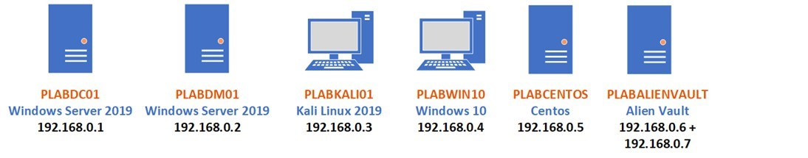
- PLABDC01 - (Windows Server 2019 - Domain Server)
- PLABDM01 - (Windows Server 2019 - Domain Member)
- PLABKALI01 - (Kali Linux 2019 - Linux Kali)
- PLABWIN10 - (Windows 10 - Domain Member Workstation)
- PLABCENTOS - (Centos 8 Linux - Stand-alone Linux Server)
- PLABALIENVAULT - (Alien Vault Linux Security Management Platform)
Task 1 - Nmap
Network Mapper, known as Nmap, is a network and host
discovery tool. It is one of the most widely used tools for various
activities, such as:
- Discovering hosts, services, and ports
- Fingerprinting operating systems
- Enumeration
- Discovering vulnerabilities on the local and remote host
- Finding the IP address of a remote system
Using Nmap, you can scan for targets by:
- Scanning for a single IP: nmap 192.168.0.1
- Scanning for a host by using its name: nmap host1.plab.com
- Scanning an entire subnet: nmap plab.com/24, nmap 192.168.0.0/24, nmap 192.168.0.*
- Scanning for a range of IP addresses: nmap 192.168.0.1-10
- Scanning for a range and a system outside the range: nmap 192.168.0.1, 1.10
In this task, you will use Nmap to identify the live systems on a network.
Step 1
Ensure you have powered on all the devices listed in the introduction and connect to PLABKALI01.
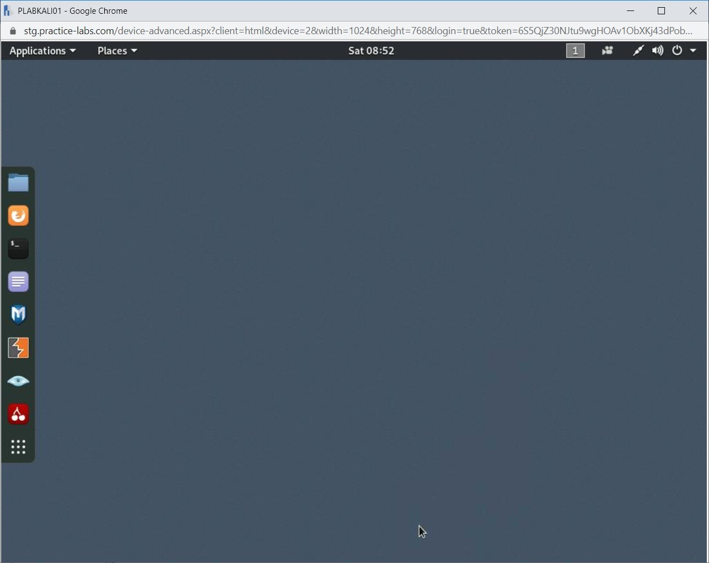Figure 1.1 Screenshot of PLABKALI01: Showing the desktop of PLABKALI01.
Step 2
On the desktop, click Terminal.
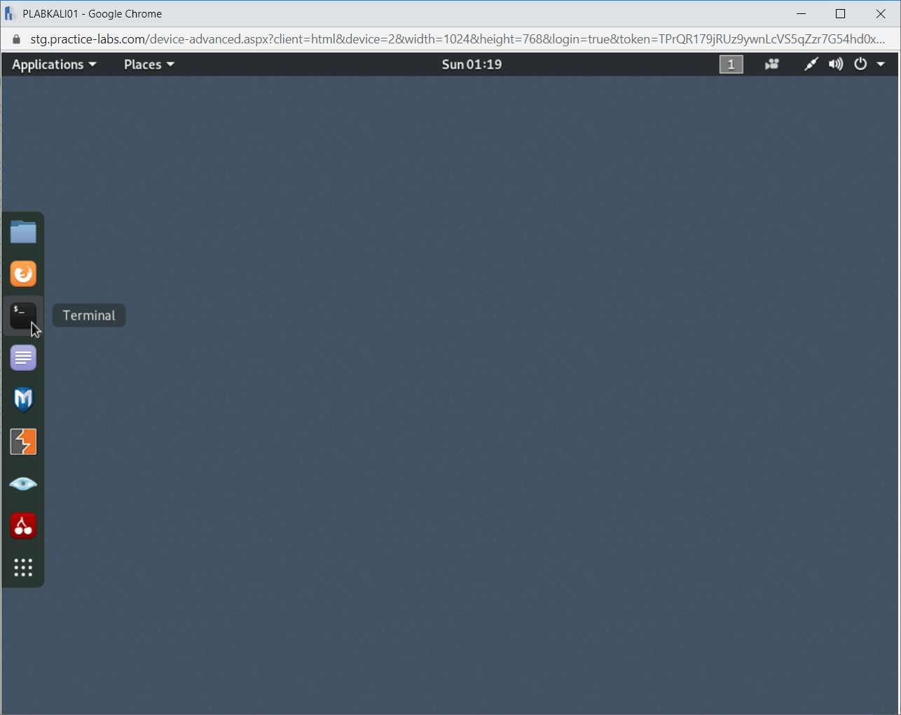Figure 1.2 Screenshot of PLABKALI01: Clicking the Terminal icon in the left pane.
Step 3
The terminal window is displayed. You will now
perform a ping scan to discover the live hosts in a network. Type the
following command:
nmap -sP 192.168.0.0/24
Press Enter.
Note: the -sP parameter is used for ping scanning. When you use CIDR /24, Nmap will scan all 256 IP addresses on the network.
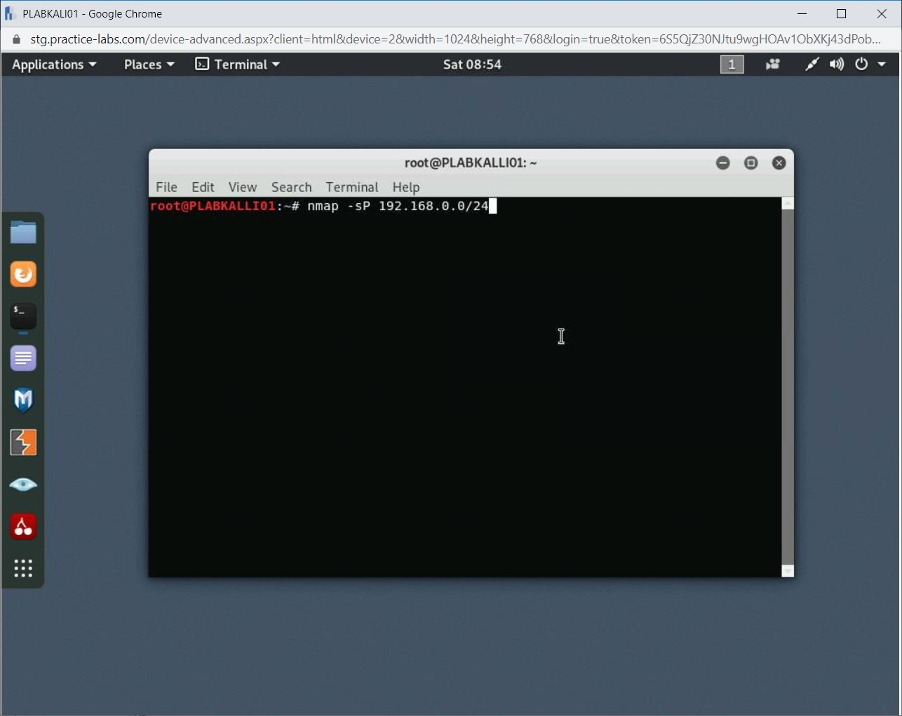Figure 1.3 Screenshot of PLABKALI01: Executing the nmap command with the -sP parameter.
Step 4
The output of the command is displayed. Notice that
eight hosts were detected. Along with this, the gateway IP,
192.168.0.250, is also found.
Figure 1.4 Screenshot of PLABKALI01: Showing the output of the nmap -sP command.
Step 5
Clear the screen by entering the following command:
clear
You can also perform a scan without ping. To do this, type the following command:
nmap -sn 192.168.0.0/24
Press Enter.
Figure 1.5 Screenshot of PLABKALI01: Executing the nmap command with the -sn parameters.
Step 6
The output of the command is displayed. Notice that without the ping scan, it has detected eight systems on the network.
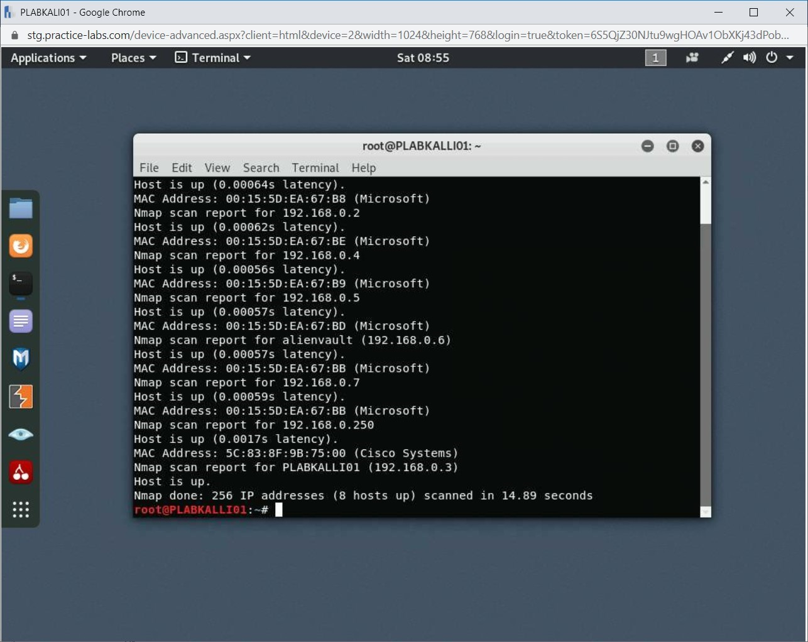Figure 1.6 Screenshot of PLABKALI01: Showing the output of the nmap -sn command.
Step 7
Clear the screen by entering the following command:
clear
You can also trace the path between your system and
each of the hosts that is live on the network. To do this, type the
following command:
nmap --traceroute 192.168.0.0/24
Press Enter.
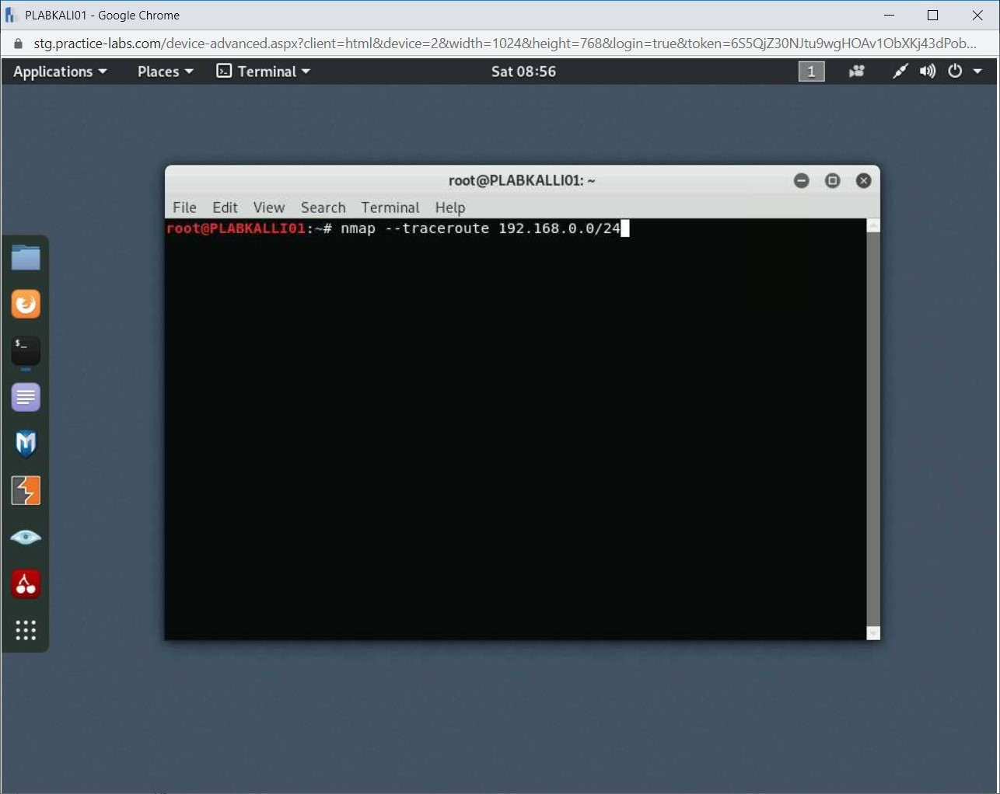Figure 1.7 Screenshot of PLABKALI01: Executing the nmap command with the --traceroute parameter.
Step 8
Notice the output of the command. In the output, the
hops from your system to the systems on the network are displayed. Since
this is within the same IP subnet, there is a single hop. The output
also displays open ports on each live system.
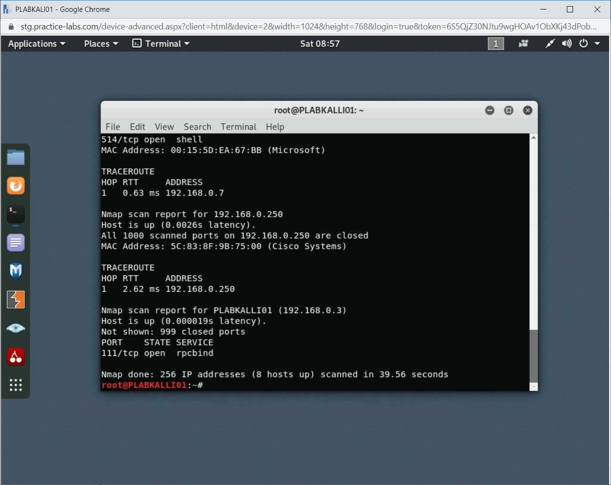Figure 1.8 Screenshot of PLABKALI01: Showing the output of the nmap - - traceroute command.
Step 9
Clear the screen by entering the following command:
clear
You can also scan for live hosts on a network using an IP address range. To do this, type the following command:
nmap 192.168.0.1-4
Press Enter.
Figure 1.9 Screenshot of PLABKALI01: Executing the nmap command a series of target IP addresses.
Step 10
The output of the command is displayed. Notice that
only four hosts are listed in the scan. Without any parameters, the nmap
command scans for the live systems and open ports.
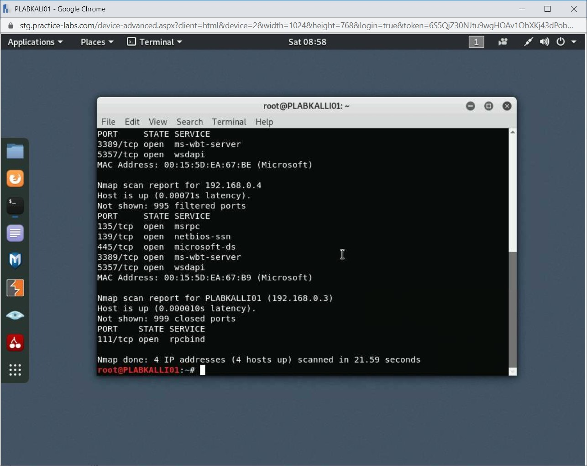Figure 1.10 Screenshot of PLABKALI01: Showing the output of the nmap command with a series of IP addresses.
Step 11
Clear the screen by entering the following command:
clear
You can also use a wildcard to scan an IP range. To do this, type the following command:
nmap 192.168.0.*
Press Enter.
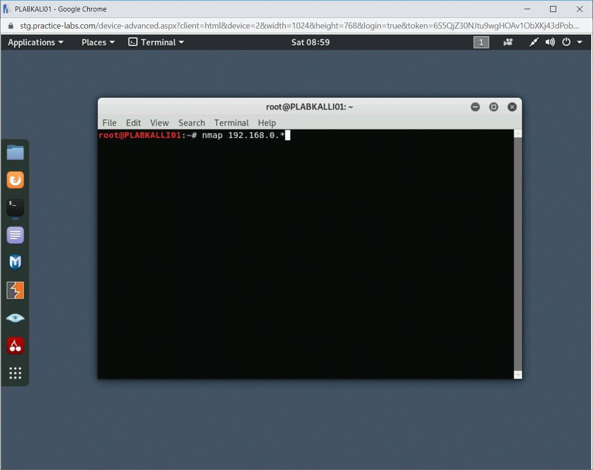Figure 1.11 Screenshot of PLABKALI01: Executing the nmap command with the wildcard to scan an IP range.
Step 12
Notice the output of the command. It has searched for all live systems in the subnet of 256 IP addresses.
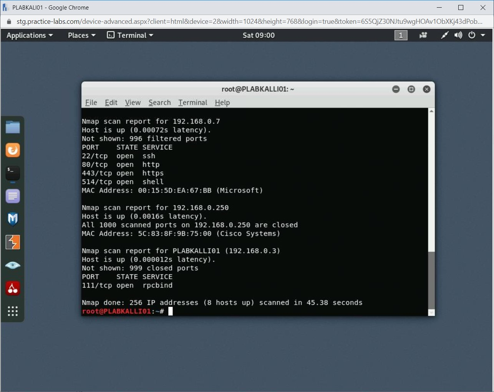Figure 1.12 Screenshot of PLABKALI01: Showing the output of the nmap command with a wildcard.
Step 13
A discovery scan is used to locate live hosts on a
network. There are various methods that can be used in discovery scans.
Some of these are:
- Using ping scan
- Using ARP scan
- Using a port scan
Clear the screen by entering the following command:
clear
Using ping for discovering a host is a common method.
Type the following command:
nmap -sP 192.168.0.0/24
Press Enter.
Note: Several
systems have firewalls running that block ping commands, and therefore,
discovering a host using ping may not be successful.
Figure 1.13 Screenshot of PLABKALI01: Executing the nmap command with the -sP parameters.
Step 14
Notice the output of the command. When you execute this command, it sends an ICMP REQUEST message to every IP address. The hosts that respond to the ICMP REQUEST message are considered alive and are listed in the output. This command output does not list the hosts that do not respond.
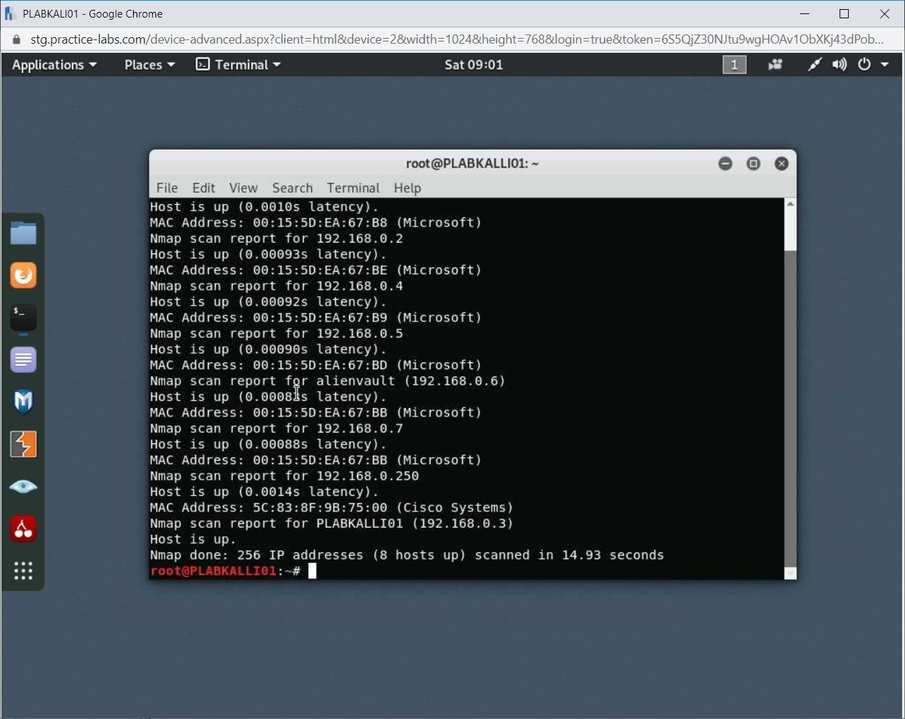Figure 1.14 Screenshot of PLABKALI01: Showing the output of the nmap -sP command.
Step 15
Clear the screen by entering the following command:
clear
You can also send ARP requests to the hosts on a
given subnet, and if the target system responds to these requests, then
it means that it is alive. This method, unlike the Ping scan method, is
not usually blocked by the firewall. Therefore, you are likely to get a
better outcome.
To send the ARP requests to the 192.168.0.0/24 subnet, type the following command:
nmap -PR 192.168.0.0/24
Press Enter.
Figure 1.15 Screenshot of PLABKALI01: Executing the nmap command with the -PR parameters.
Step 16
Notice the outcome of this command. With the -PR parameter, the nmap command has scanned 256 IP addresses and found eight hosts live. Open ports are also listed.
Note: You can scan for the live hosts without also detecting the open ports. To do this, you can use the following command: nmap -sn 192.168.0.0/24.
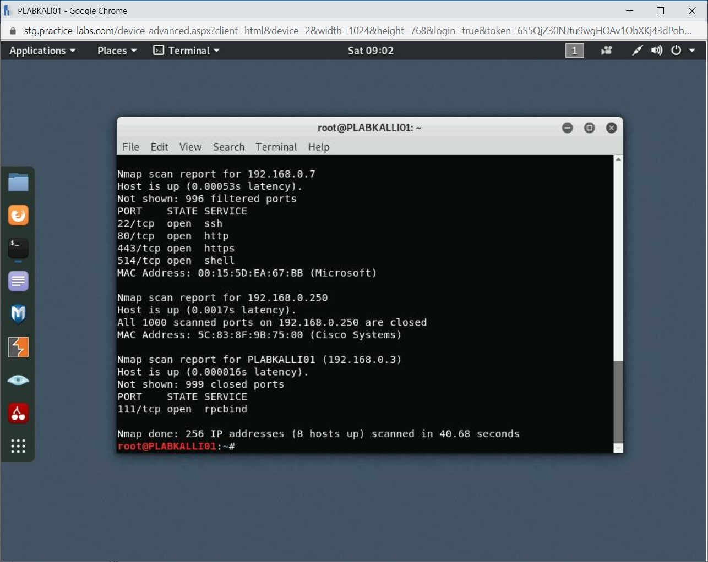Figure 1.16 Screenshot of PLABKALI01: Showing the output of the nmap -PR command.
Step 17
Clear the screen by entering the following command:
clear
You can also scan for open ports to detect the system
status. This could be useful when the systems have firewalls enabled,
or the systems are in another subnet or network. When you attempt to
detect the ports, the systems will respond to the request. Type the
following command:
nmap -p 80 192.168.0.0/24
Press Enter.
Figure 1.17 Screenshot of PLABKALI01: Executing the nmap command with the -p parameters.
Step 18
The output of this command is displayed. Notice that eight hosts are scanned, but one host, 192.168.0.2, is running a Web server.
Note: With the -p parameter, you can scan for more than one port. For example, you can use the following command: nmap -p 22, 23, 80, 139, 445, 3389 192.168.0.0/24. Each port number needs to be separated by a comma.
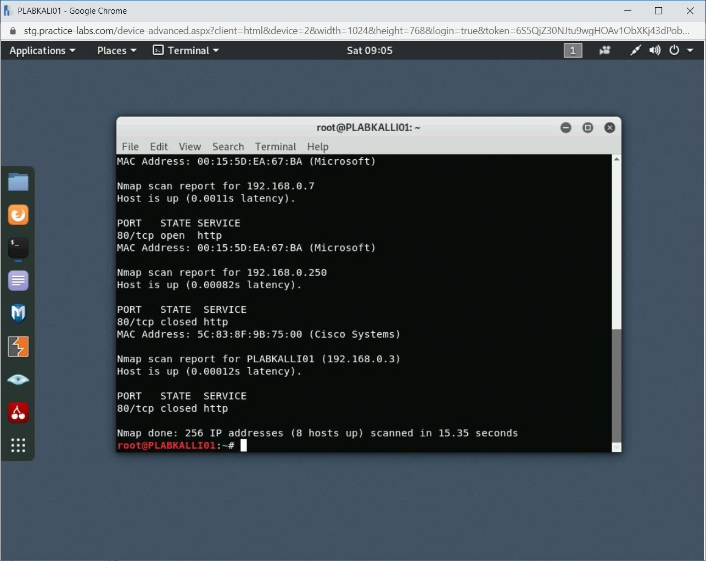Figure 1.18 Screenshot of PLABKALI01: Showing the output of the nmap -p command.
Step 19
You can also send the SYN message to a specific port on a subnet to detect live systems. To do this, type the following command:
nmap -sn -PS80 192.168.0.0/24
Press Enter.
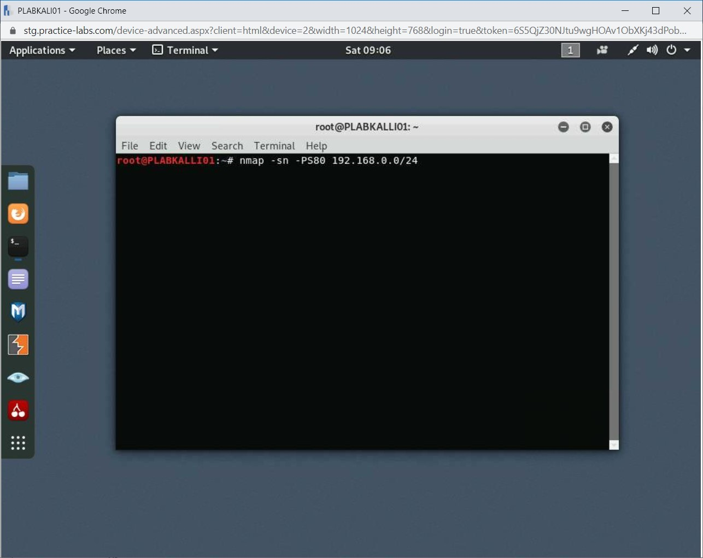Figure 1.19 Screenshot of PLABKALI01: Executing the nmap command with the -sn and -PS parameters.
Step 20
The output of this command is displayed. Notice that eight hosts were found to be live in this subnet.
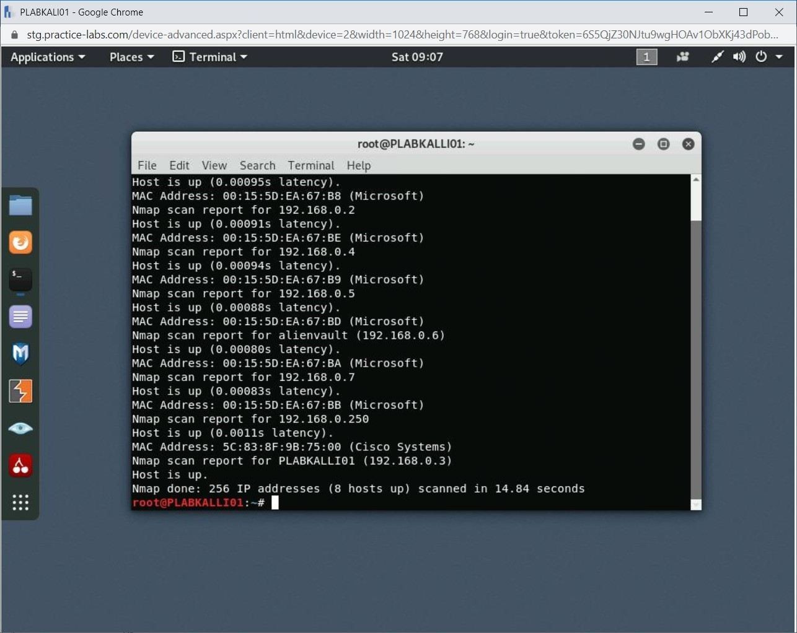Figure 1.20 Screenshot of PLABKALI01: Showing the output of the nmap -sn -PS80 command.
Step 21
Using the port scan method, you can determine the TCP
or UDP port that is being used. You can either scan for the entire
range of ports, which are from 1 to 65535, or can scan for specific
ports. When scanning for ports, you need to be aware that there can be
different states of a port:
Open: An application is listening for connections on this port.
Closed: The messages were received, but no application is listening on the port.
Filtered: The messages were not received, and
the state of the port could not be determined. This state occurs when
some type of filtering is being used on the port.
Unfiltered: The messages are received, but the state of the port could not be determined.
Open/Filtered: The port was either filtered or open, but Nmap was not able to determine the state.
Closed/Filtered: The port was either filtered or closed, but Nmap was not able to determine the state.
Clear the screen by entering the following command:
clear
One of the simplest methods is to target a system
with the nmap command without using any parameters. To do this, type the
following command:
nmap 192.168.0.2
Press Enter.
Figure 1.21 Screenshot of PLABKALI01: Executing the nmap command with the IP address.
Step 22
The output of this command is displayed. Notice that 192.168.0.2 has two ports open, which are 3389 and 5357.
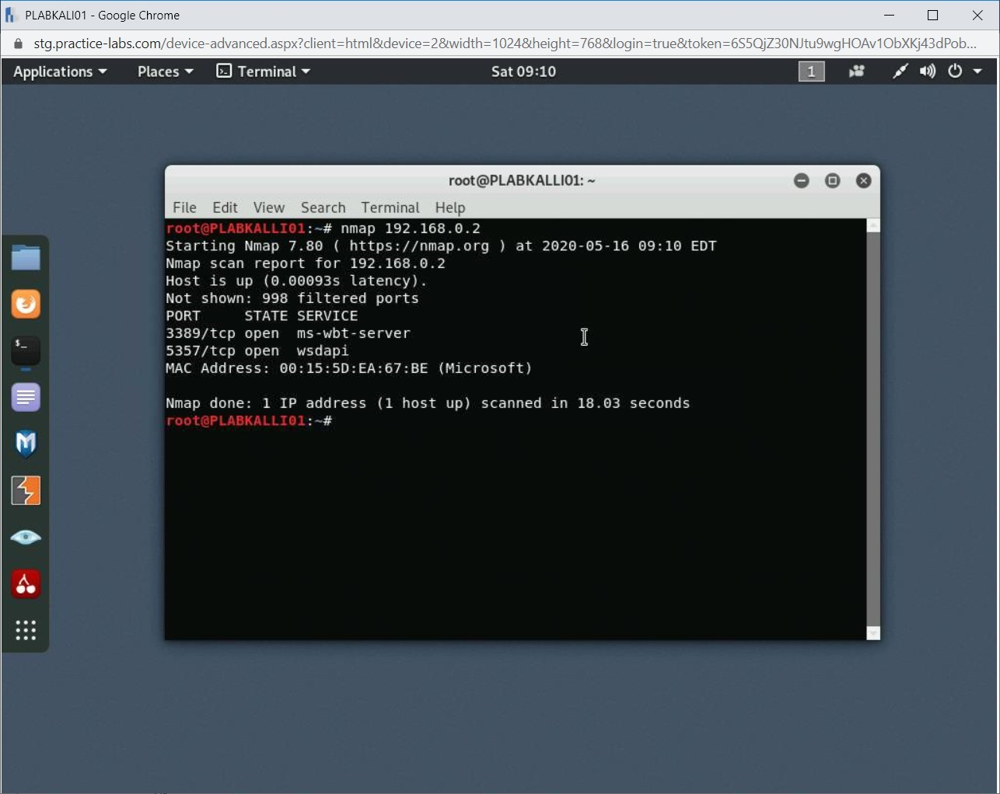Figure 1.22 Screenshot of PLABKALI01: Showing the output of the nmap command.
Step 23
Clear the screen by entering the following command:
clear
You can scan for a single port on a host. To do this, type the following command:
nmap -p 22 192.168.0.1
Press Enter.
Figure 1.23 Screenshot of PLABKALI01: Executing the nmap command with the -p parameters along with the port number.
Step 24
The output of this command is displayed. Notice that the state of the port is set to filtered.
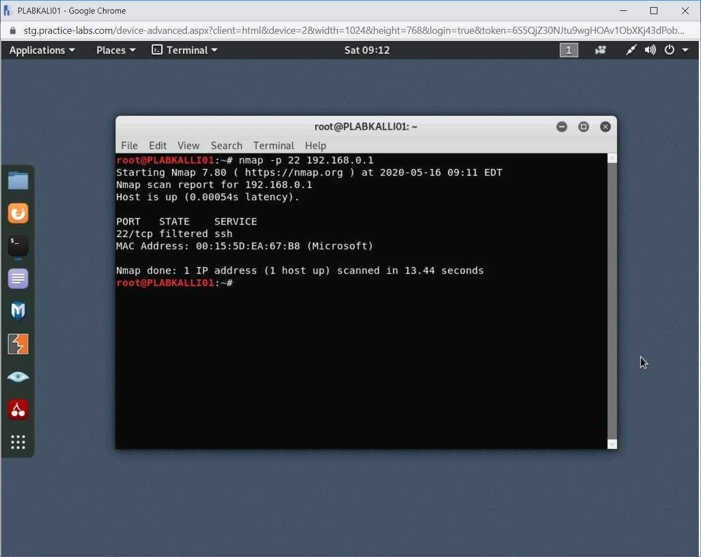Figure 1.24 Screenshot of PLABKALI01: Showing the output of the nmap -p 22 command.
Step 25
Let’s try to scan for the range of ports on 192.168.0.1, which is the domain controller. To do this, type the following command:
nmap -p 1-100 192.168.0.1
Press Enter.
 Figure 1.25 Screenshot of PLABKALI01: Executing the nmap command with the -p parameter along with the port range.
Figure 1.25 Screenshot of PLABKALI01: Executing the nmap command with the -p parameter along with the port range.
Step 26
Notice that the command has been executed successfully. The output displays that there are 98 filtered ports and two open ports, which are 53 and 88.
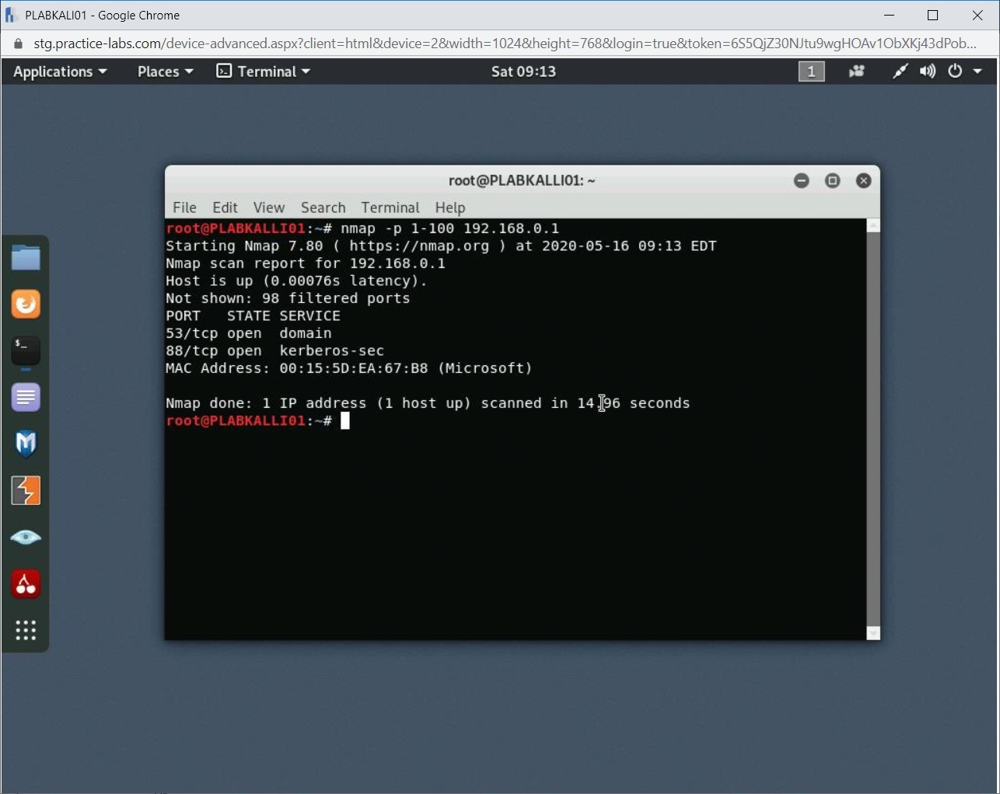Figure 1.26 Screenshot of PLABKALI01: Showing the output of the nmap -p 1-100 command.
Step 27
Clear the screen by entering the following command:
clear
A fast scan will scan for the 100 common ports on a given system. To do this, type the following command:
nmap -F 192.168.0.1
Press Enter.
Figure 1.27 Screenshot of PLABKALI01: Executing the nmap command with the -F parameter.
Step 28
The output of this command is displayed. Notice that
the output of this command is different than the previous command. It
shows 92 filtered ports and 8 open ports. The output is different
because the fast scan uses the 100 most common ports.
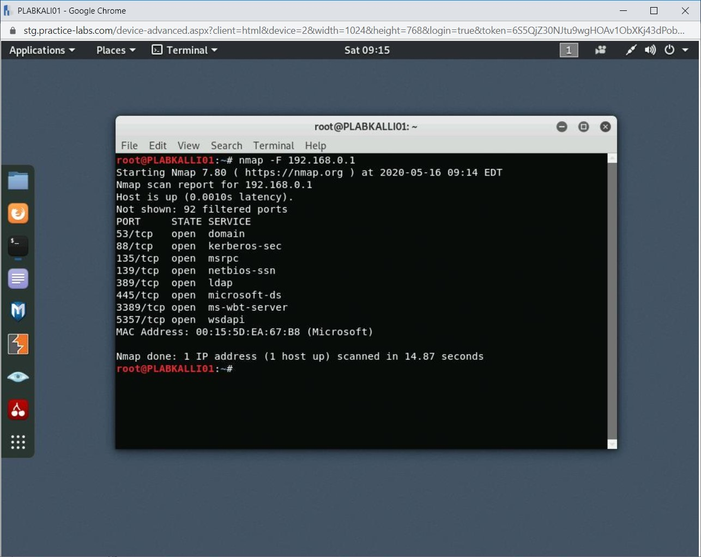Figure 1.28 Screenshot of PLABKALI01: Showing the output of the nmap -F command.
Step 29
Clear the screen by entering the following command:
clear
You will now scan for 65535 ports on a system. To do this, type the following command:
nmap -p- 192.168.0.1
Press Enter.
Note: This command will take a while to generate the output.
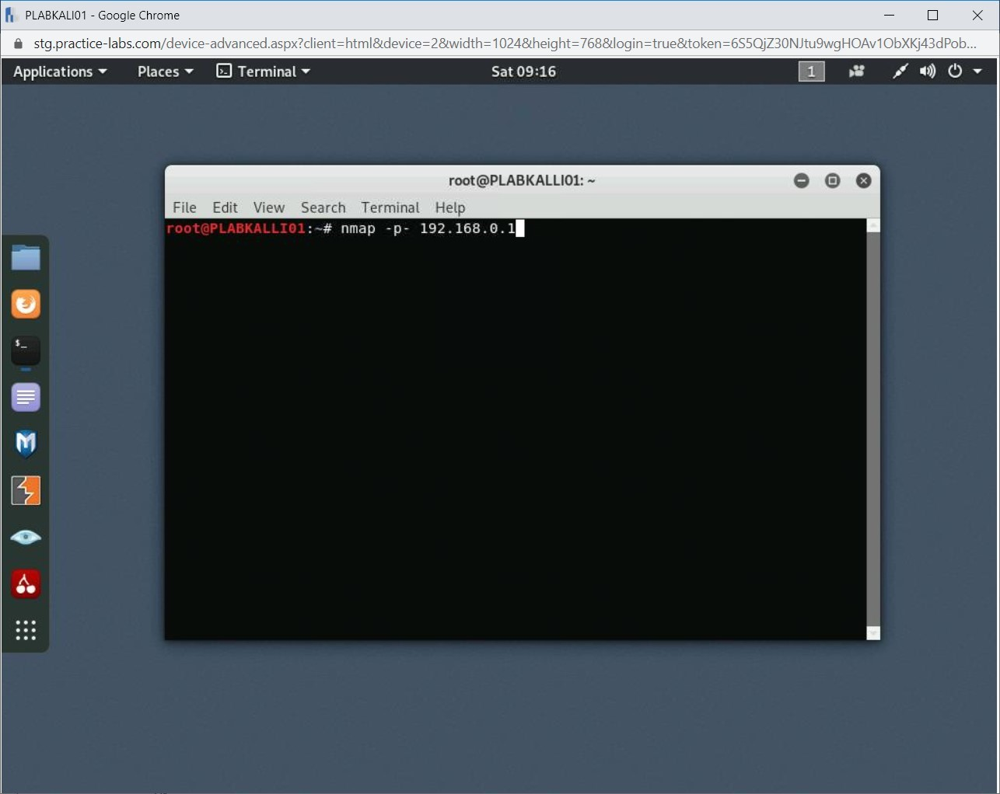Figure 1.29 Screenshot of PLABKALI01: Executing the nmap command with the -p- parameter.
Step 30
The output of this command is displayed. Note that it
took nearly two minutes to generate the output due to the number of
ports being scanned. It found several ports open on the domain
controller, which is 192.168.0.1.
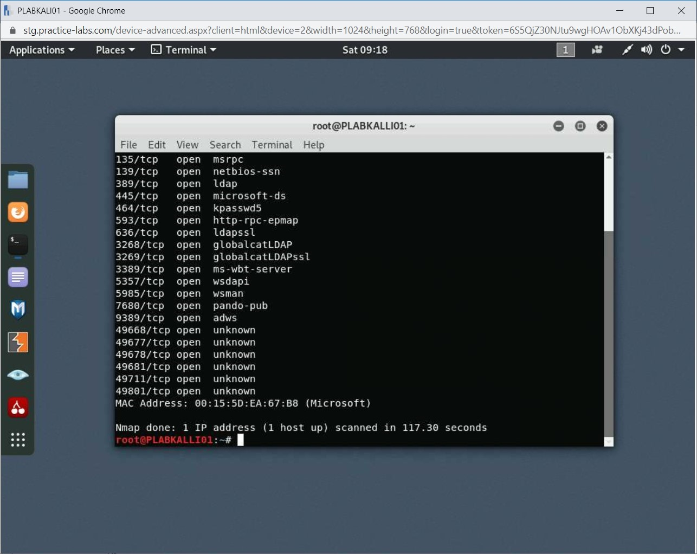Figure 1.30 Screenshot of PLABKALI01: Showing the output of the nmap -p- command.
Step 31
Clear the screen by entering the following command:
clear
Next, you will perform port scanning using TCP connect. Type the following command:
nmap -sT 192.168.0.1
Press Enter.
Figure 1.31 Screenshot of PLABKALI01: Executing the nmap command with the -sT parameters.
Step 32
Notice the output. This command has scanned 1000 ports. There are 987 filtered and 13 open ports.
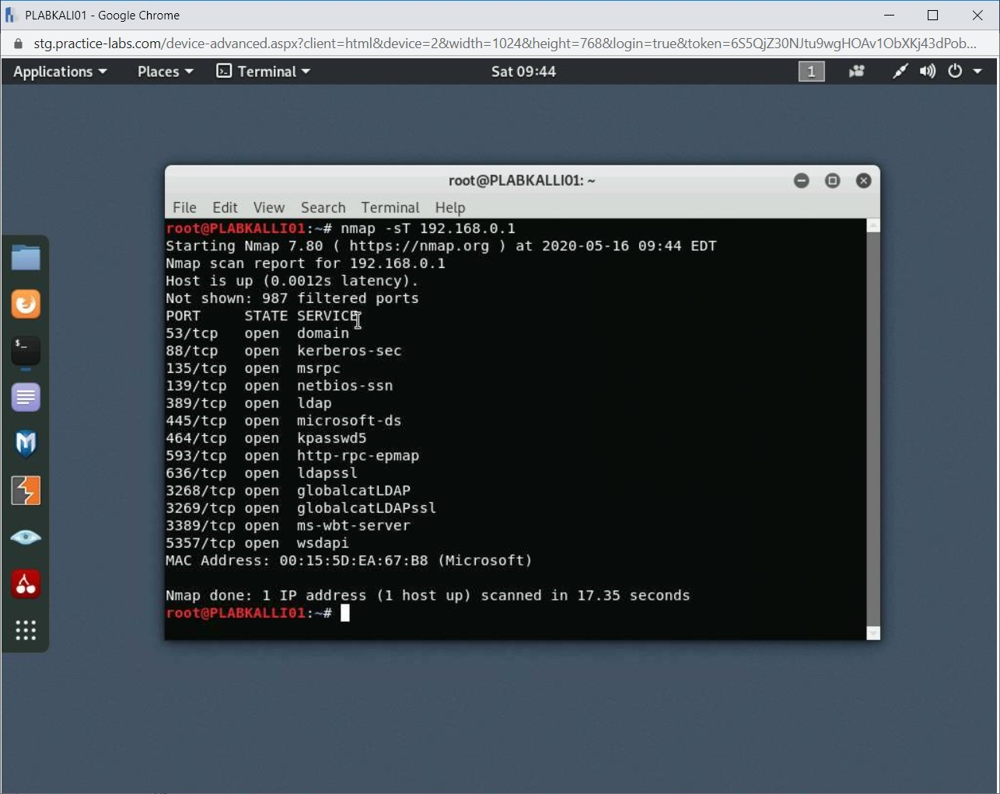Figure 1.32 Screenshot of PLABKALI01: Showing the output of the nmap -sT command.
Step 33
Clear the screen by entering the following command:
clear
Let’s scan for the selective UDP ports only. Type the following command:
nmap -sU -p 53,80,3389 192.168.0.1
Press Enter.
Note: Do not
input a space after the comma when listing the ports. If you do, Nmap
considers it to be the IP address and will attempt to find the route to
the port number.
Figure 1.33 Screenshot of PLABKALI01: Executing the nmap command with the -sU and -p parameters.
Step 34
The output of this command is displayed. Notice that only NTP port, 53, is open. The remaining two ports are filtered.
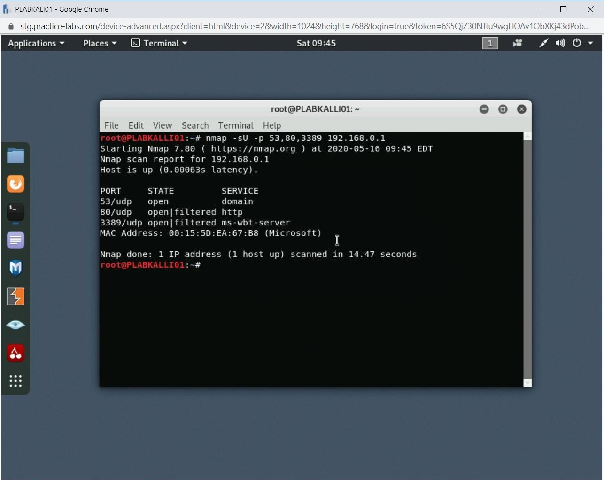Figure 1.34 Screenshot of PLABKALI01: Showing the output of the nmap -sU -p command.
Step 35
Clear the screen by entering the following command:
clear
You can also use the --top-ports parameter with a specified number to find ports. To do this, type the following command:
nmap --top-ports 10 192.168.0.1
Press Enter.
Figure 1.35 Screenshot of PLABKALI01: Executing the nmap command with the -top-ports parameter.
Step 36
Notice that the top 10 used ports are listed as the output with their current state.
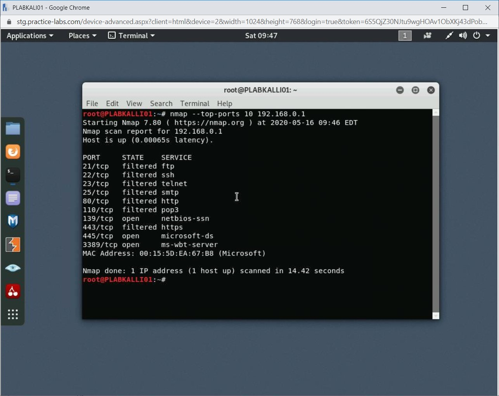Figure 1.36 Screenshot of PLABKALI01: Showing the output of the nmap -top-ports command.
Step 37
Clear the screen by entering the following command:
clear
Task 2 - Hping3
Hping3 is a powerful tool that can be used for various types of scanning in a network. It can perform Layer 3 and Layer 4 scanning.
In this task, you will use the hping3 tool to perform
various types of network scanning. To do this, perform the following
steps:
Step 1
Ensure you have powered on the required devices and connect to PLABKALI01.
Click the Terminal icon in the left pane if the terminal is already not opened.
Step 2
You can perform an ICMP discovery of a single host using hping3.
Type the following command:
hping3 192.168.0.1 --icmp
Press Enter.
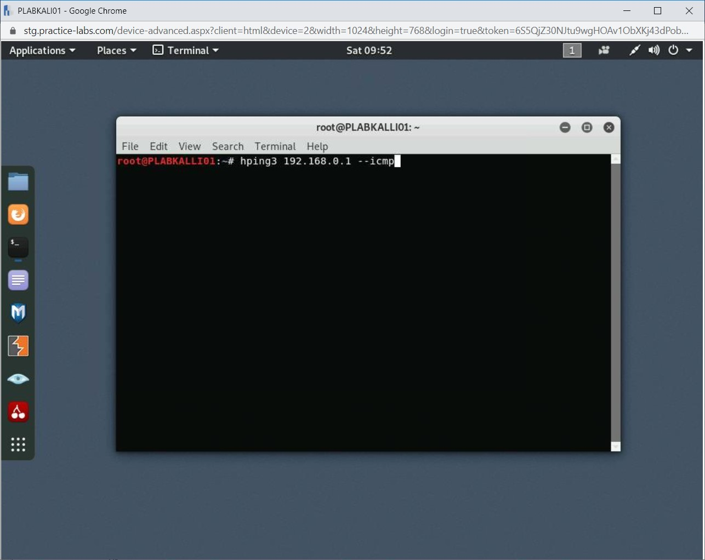Figure 1.37 Screenshot of PLABKALI01: Entering the command to perform ICMP discovery of a single host.
Step 3
The output of the command is displayed.
The hping3 command will continue for an indefinite time unless you stop it. To do this, press the Ctrl + C keys.
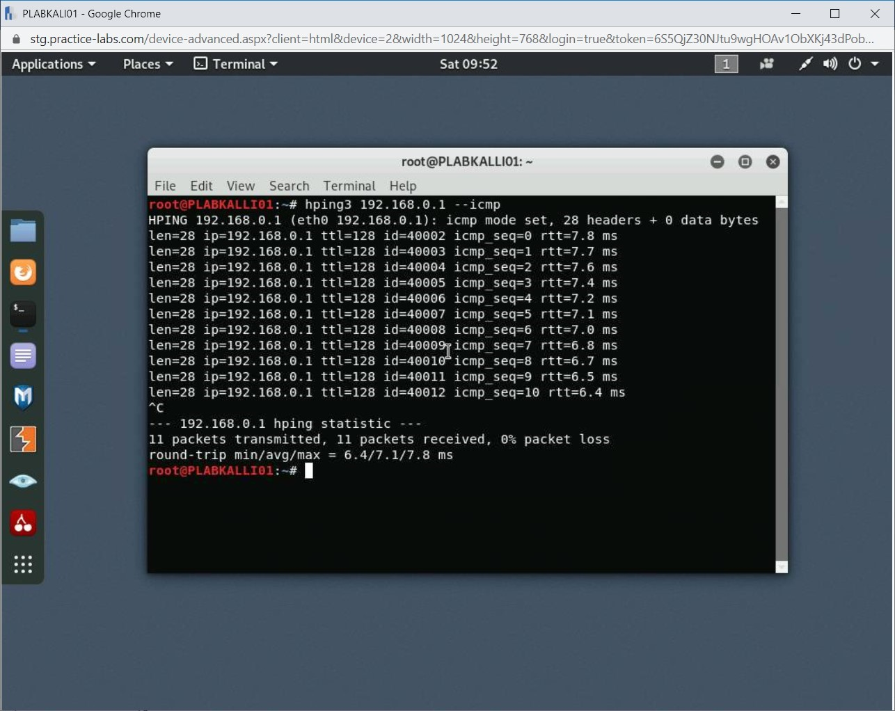Figure 1.38 Screenshot of PLABKALI01: Showing the response from the target system.
Step 4
Clear the screen by entering the following command:
clear
You can also limit the command to perform ICMP discovery for a limited number. To do this, type the following command:
hping3 192.168.0.1 --icmp -c 5
Press Enter.
Figure 1.39 Screenshot of PLABKALI01: Entering the hping3 command to perform ICMP discovery for a limited number.
Step 5
The output of the hping3 command will be limited to five times.
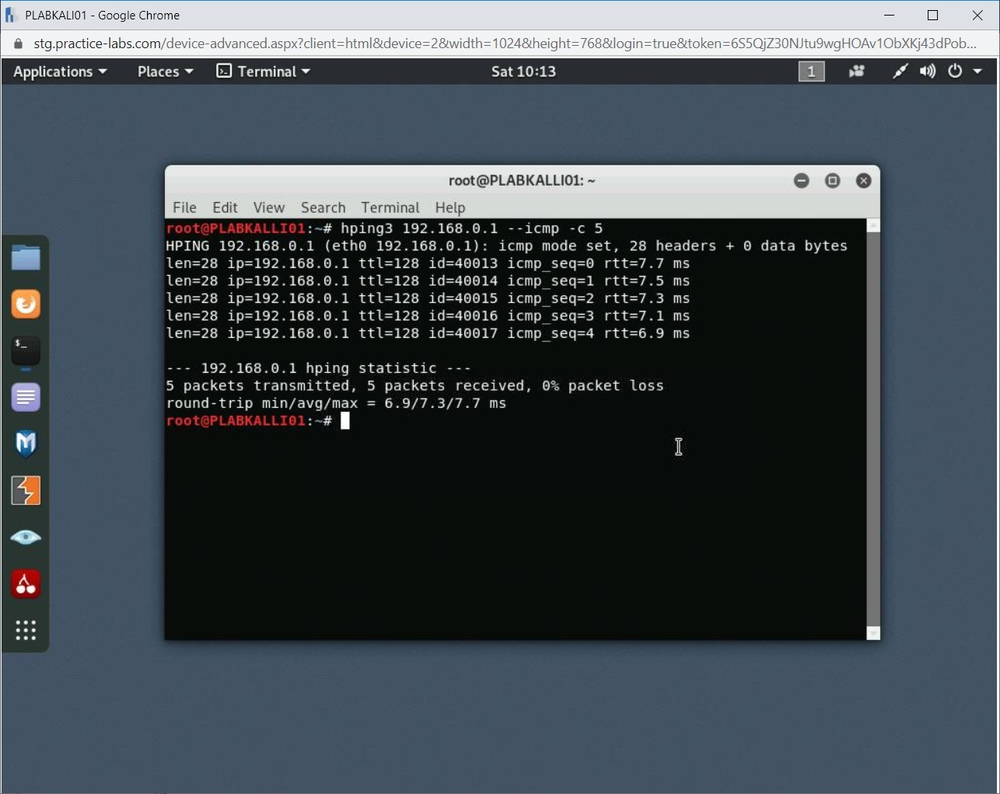Figure 1.40 Screenshot of PLABKALI01: Showing the output of the hping3 command.
Step 6
Clear the screen by entering the following command:
clear
You can also use the hping3 command to scan for a specific TCP port. You need to specify the port number with the - - scan parameter. Type the following command:
hping3 intranet --scan 80 -S
Press Enter.
Note: The -S parameter sets the SYN flag.
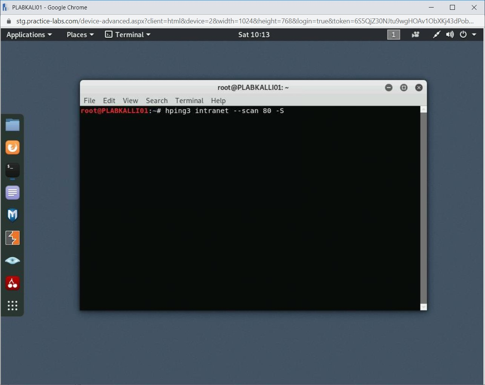Figure 1.41 Screenshot of PLABKALI01: Entering the hping3 command to scan for a specific TCP port.
Step 7
Notice that in the flags column, S and A are mentioned. This means that the SYN+ACK response was received from the target system.
SYN+ACK is part of the TCP 3-way handshake process between two systems, which has the following steps:
- Host1 sends a TCP SYN (synchronize) packet to Host2
- Host2 receives Host1's SYN (synchronize) packet
- Host2 sends an SYN (synchronize) -ACK (Acknowledgement).
- Host1 receives Host2's SYN+ACK
- Host1 sends ACK (Acknowledgement)
- Host2 receives ACK (Acknowledgement).
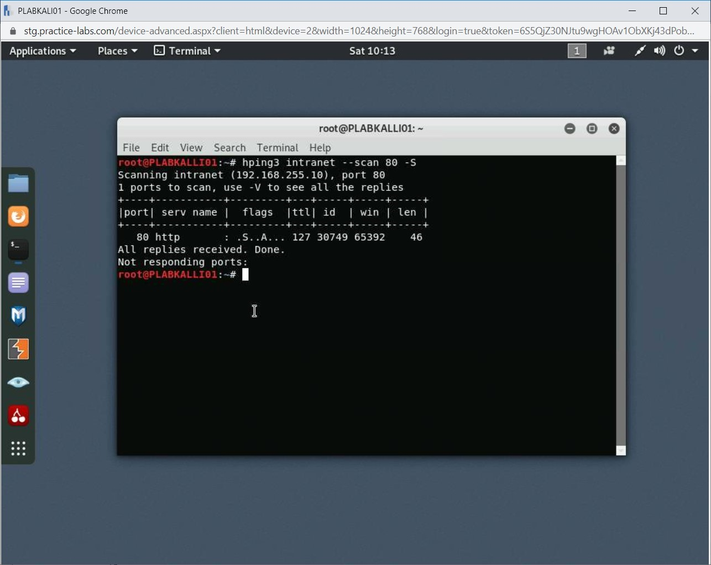Figure 1.42 Screenshot of PLABKALI01: Showing the output of the hping3 command.
Step 8
Clear the screen by entering the following command:
clear
You can also scan for multiple ports using the hping3 command. To do this, type the following command:
hping3 intranet --scan 22,80,443 -S
Press Enter.
Figure 1.43 Screenshot of PLABKALI01: Entering the command to scan for multiple ports using the hping3 command.
Step 9
Notice the output. Only port 80 has responded. The output only displays the ports if the SYN+ACK response is received.
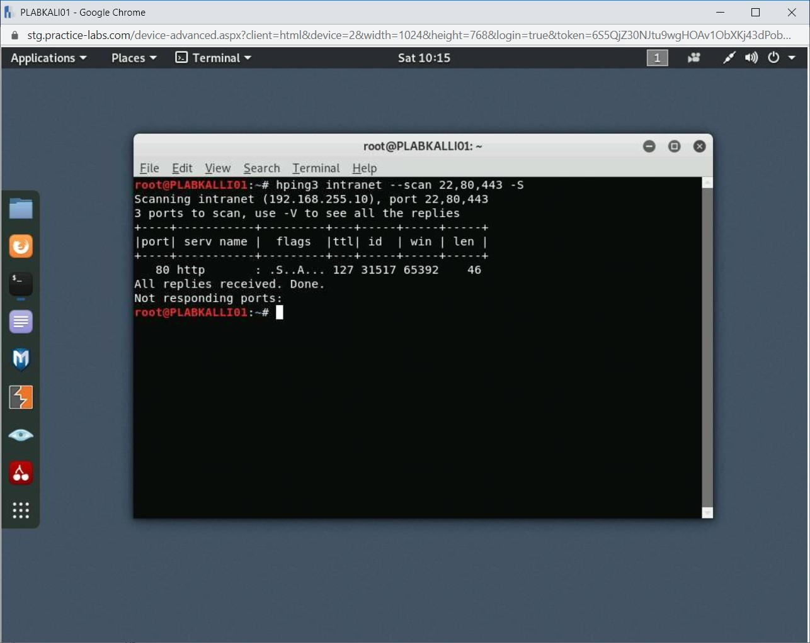Figure 1.44 Screenshot of PLABKALI01: Showing the output of the hping3 command.
Step 10
Clear the screen by entering the following command:
clear
You can also scan for a range of ports. To do this, you need to specify the first and the last port. Type the following command:
hping3 192.168.0.1 --scan 1-80 -S
Press Enter.
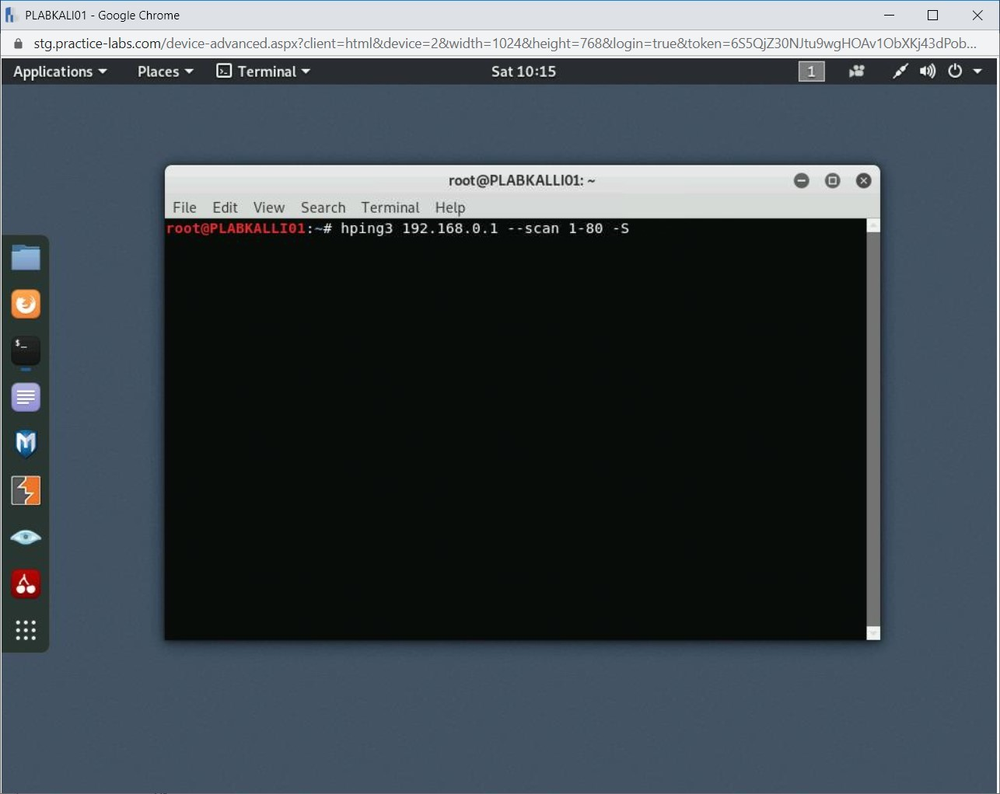Figure 1.45 Screenshot of PLABKALI01: Entering the hping3 command to scan for a range of ports.
Step 11
Notice the output. Only port 53 is open.
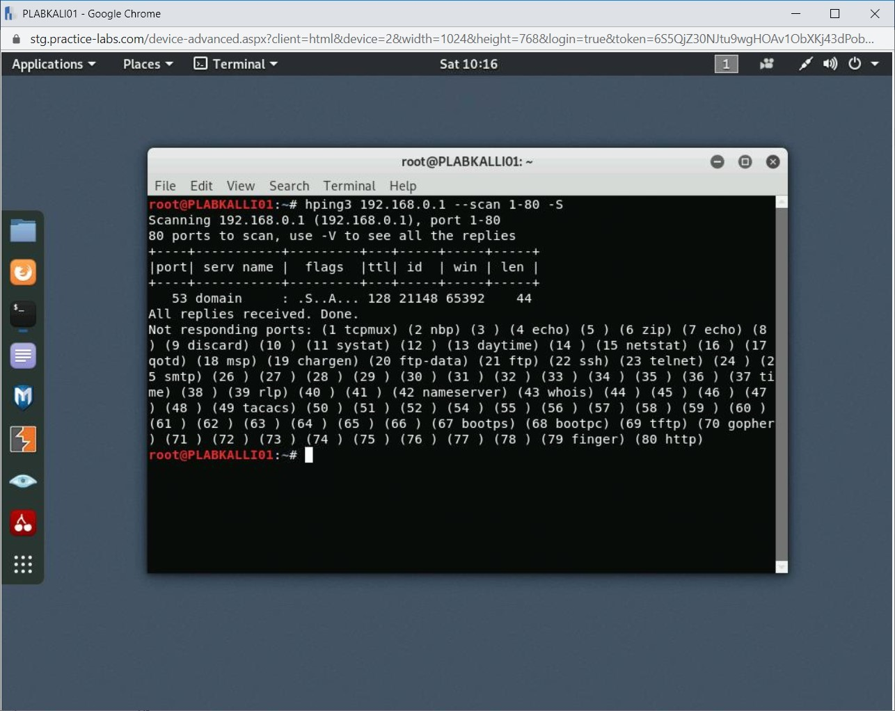Figure 1.46 Screenshot of PLABKALI01: Showing the output of the hping3 command.
Step 12
Clear the screen by entering the following command:
clear
To scan the entire TCP port range, type the following command:
hping3 192.168.0.1 --scan 1-65535 -S
Press Enter.
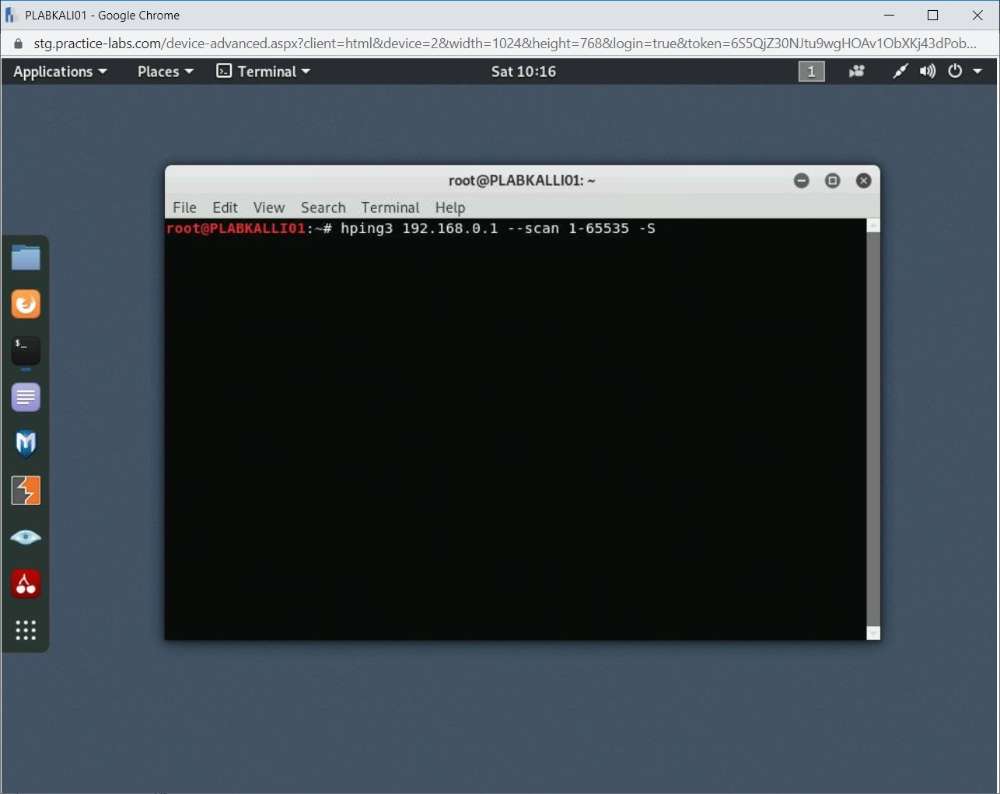Figure 1.47 Screenshot of PLABKALI01: Entering the hping3 command to scan the entire TCP port range.
Step 13
Scroll up to see the output mentioning open ports.
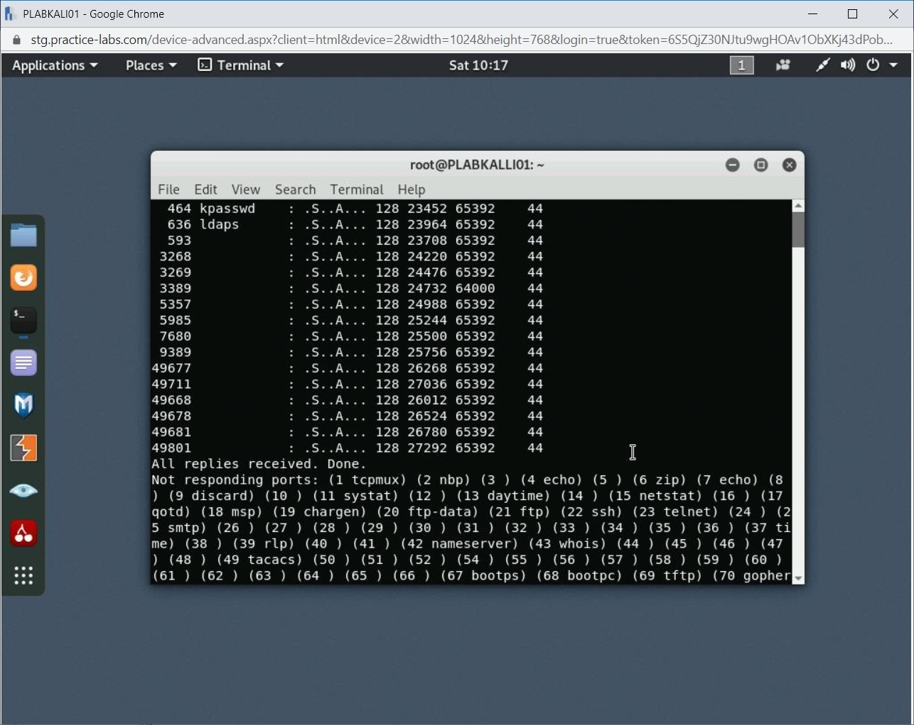Figure 1.48 Screenshot of PLABKALI01: Showing the partial output of the hping3 command.
Step 14
Scroll down to the command prompt. Notice that all closed ports are mentioned.
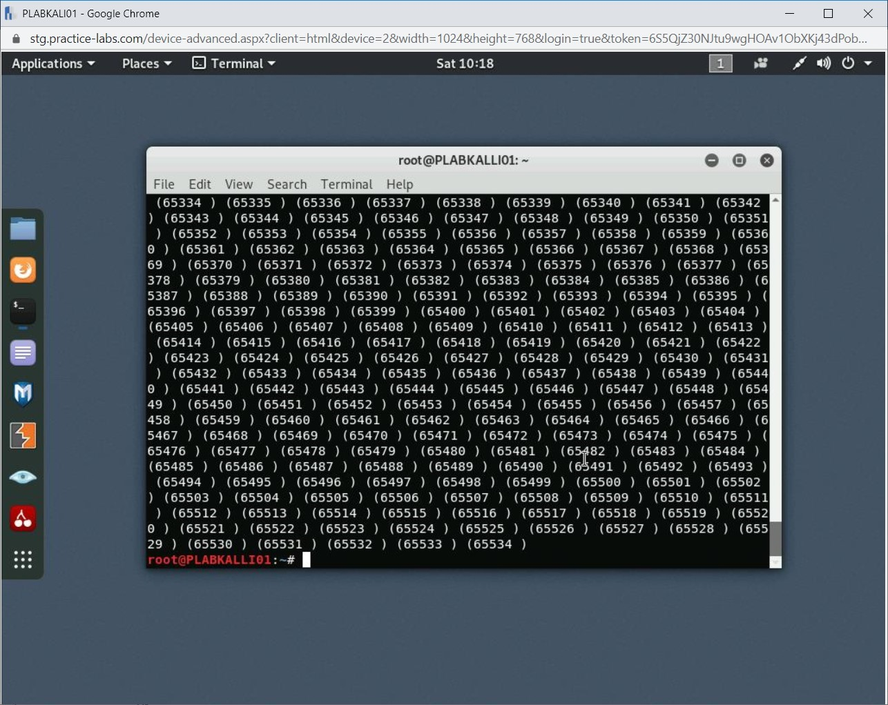Figure 1.49 Screenshot of PLABKALI01: Showing the output of the hping3 command.
Step 15
Clear the screen by entering the following command:
clear
You can use hping3 to determine open ports on a target. To identify open ports on 192.168.0.1, type the following command:
hping3 -8 0-100 -S 192.168.0.1
Press Enter.
The given command specifies the following switches:
- -8 = Enable SCAN mode.
- 0-100 = Range of ports to scan.
- -S = set SYN flag.
Figure 1.50 Screenshot of PLABKALI01: Entering the hping3 command to determine open ports on a target.
Step 16
The output displays the list of open ports and the
services that use them. The output also displays the list of ports that
do not respond to the scan.
Note: Notice the given command sent the SYN flag and received the SYN ACK flag from each open port on PLABDC01.
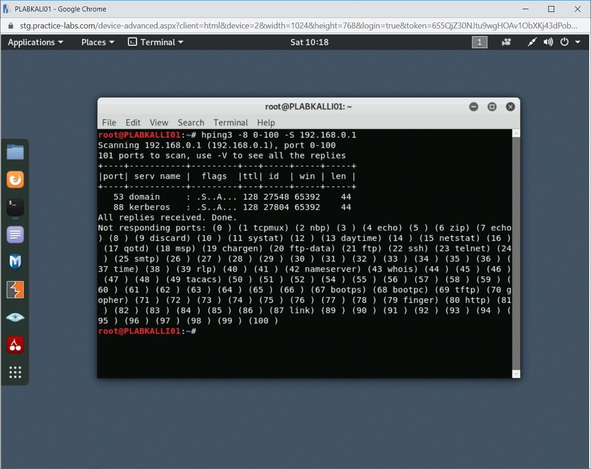Figure
1.51 Screenshot of PLABKALI01: Showing the output of the hping3 command
with the output of the list of open ports and the services that use
them.
Step 17
Clear the screen by entering the following command:
clear
Task 3 - Active vs. Passive Enumeration
Enumeration can be done using the active and passive
fingerprinting of a system. During active Enumeration, there is an
interaction with the target. You can use a tool such as Nmap to
perform active Enumeration.
When you execute a command to determine the operating
system of a remote host, packets are sent to the remote host, and the
response is received, which is compared with the list of operating
systems contained in Nmap. After the response is received, then Nmap
provides the closest match.
To perform active and passive Enumeration, perform the following steps:
Step 1
Ensure you have powered on all the devices listed in the introduction and connect to PLABKALI01. Click the Terminal icon in the left pane if the terminal is already not opened.
To enumerate a remote system, type the following command:
nmap -O 192.168.0.3
The -O parameter provides more options for operating system detection
Figure 1.52 Screenshot of PLABKALI01: Executing the nmap command with the -O parameter.
Step 2
The output of the command is displayed. In this
output, the operating system version has been detected. Nmap also
detects the open ports and also the kernel version.
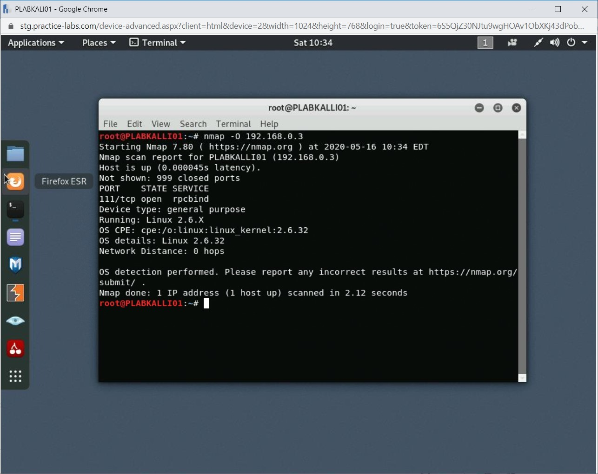Figure 1.53 Screenshot of PLABKALI01: Showing the output of the nmap -O command.
Step 3
Clear the screen by entering the following command:
clear
You can choose to skip the hosts that are not up and running and scan for the operating system only on the live hosts.
To do this, type the following command:
nmap -O --osscan-limit 192.168.0.0/24
Press Enter.
Figure 1.54 Screenshot of PLABKALI01: Executing the nmap command with the -O -osscan-limit parameters.
Step 4
The output of the command is displayed.
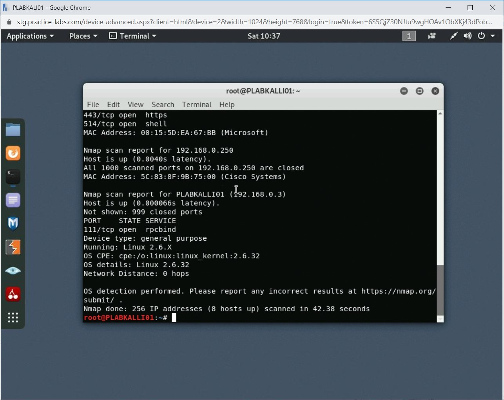Figure 1.55 Screenshot of PLABKALI01: Showing the output of the nmap -O -osscan-limit command.
Step 5
Clear the screen by entering the following command:
clear
You can also use --osscan-guess option with the -O parameter.
It will attempt to detect the operating system. If it is not able to do
so, then it will provide the closest signature possible. It performs an
aggressive detection of the operating system.
To do this, type the following command:
nmap -O --osscan-guess 192.168.0.3
Press Enter.
Figure 1.56 Screenshot of PLABKALI01: Executing the nmap command with the -O and -osscan-guess parameters.
Step 6
The output of the command is displayed.
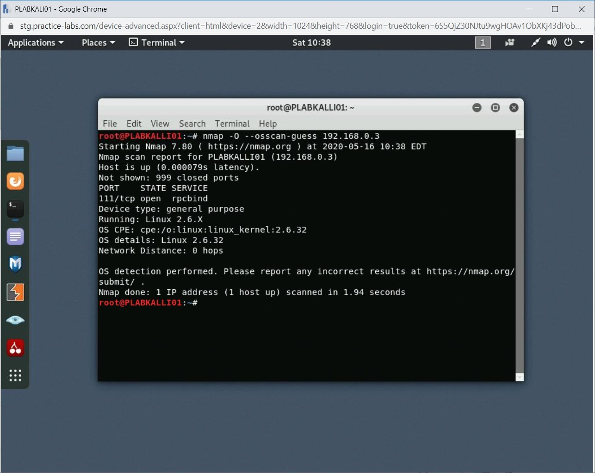Figure 1.57 Screenshot of PLABKALI01: Showing the output of the nmap -O and -osscan-guess command.
Step 7
Clear the screen by entering the following command:
clear
When you perform an operating system scan, Nmap, by
default, attempts five times to detect the name and version. However, to
speed up the process, you can limit the number of attempts.
To do this, type the following command:
nmap -O --max-os-tries 2 192.168.0.5
Press Enter.
Figure 1.58 Screenshot of PLABKALI01: Executing the nmap command with the -O and -max-os-tries parameters.
Step 8
The output of the command is displayed.
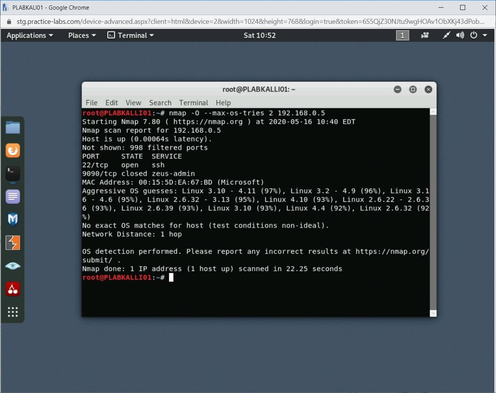Figure 1.59 Screenshot of PLABKALI01: Showing the output of the nmap -O -osscan-os-tries command.
Step 9
Clear the screen by entering the following command:
clear
You can also use the -A parameter with the nmap command to perform fingerprinting.
To do this, type the following command:
nmap -A 192.168.0.6
Press Enter.
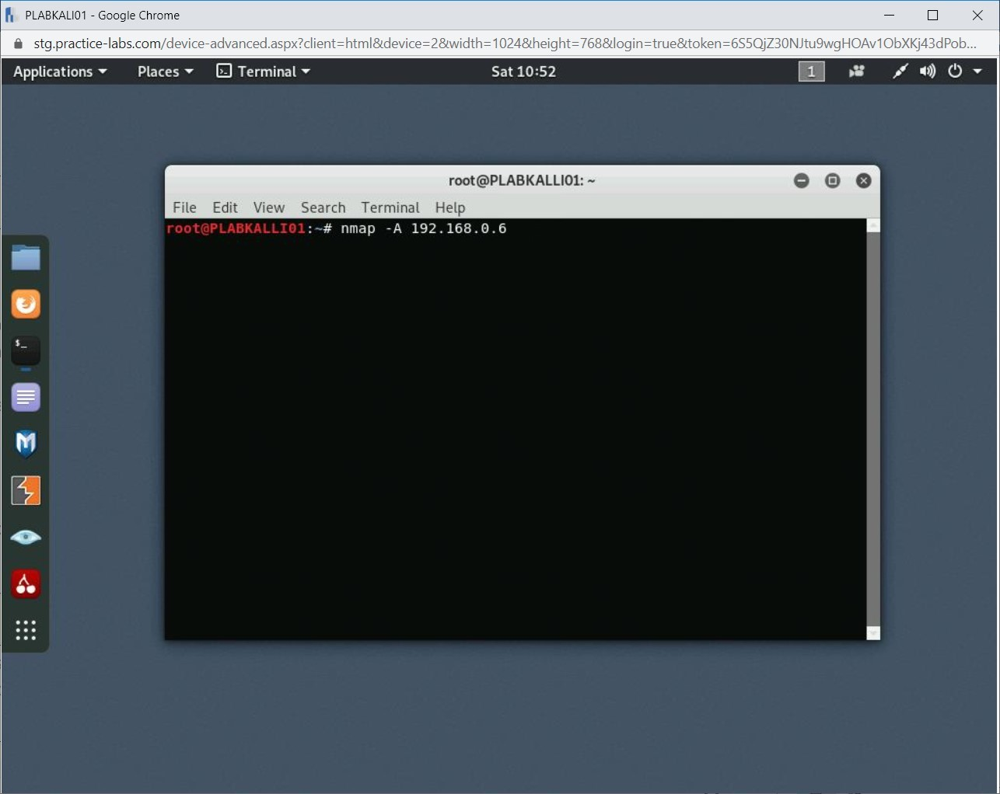Figure 1.60 Screenshot of PLABKALI01: Executing the nmap command with the -A parameter.
Step 10
The output of the command is displayed.
Close the terminal window.
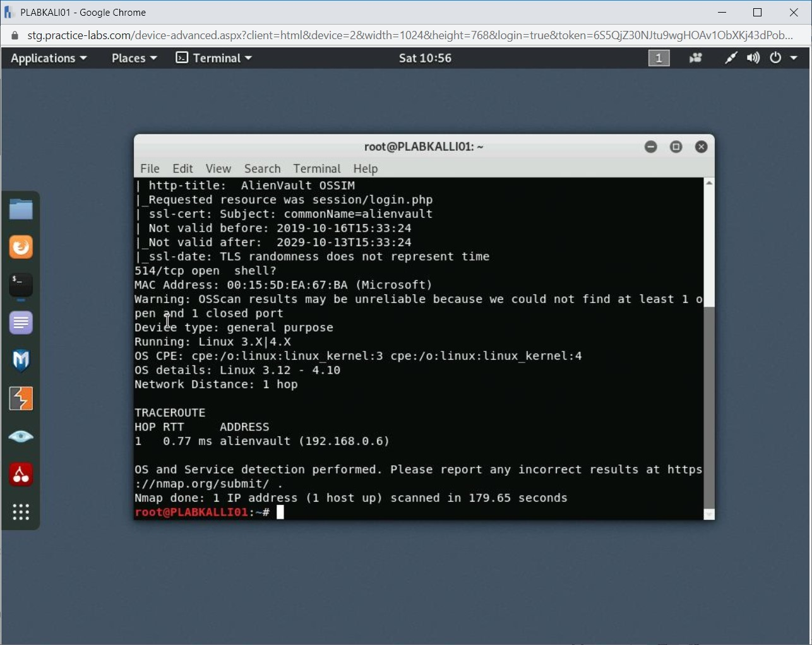Figure 1.61 Screenshot of PLABKALI01: Showing the output of the nmap -A command.
Step 11
Passive Enumeration can be performed in different
ways. For example, you can get many details from error messages, which
can contain information (such as the type of operating system and
server). Sniffing network traffic can also help determine the operating
system.
Attackers normally use Open-source intelligence
(OSINT) to obtain information that is available publicly. There is
nothing wrong with collecting such information as it is not confidential
or private. Anyone with a bit of skill can obtain information about
their targets. There are various places one can look for information:
- Whois database
- Target’s Website
- Social media profiles of employees
- Google search results
- DNS information
- Blogs and public forums
A tool, such as Maltego, helps you with detailed Footprinting information about a Website.
You can find out much information about a particular
domain. This information can be further used in attacking a particular
domain or a server.
Important: This is a live Website. Therefore, the search results may vary.
Connect to PLABWIN10.
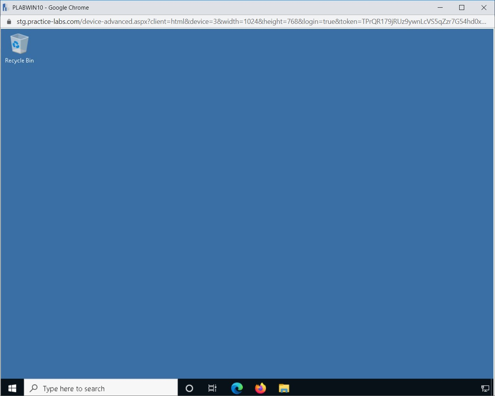Figure 1.62 Screenshot of PLABWIN10: Showing the desktop of PLABWIN10.
Step 12
In the Type here to search text box, type the following:
Internet Explorer
From the search results, select Internet Explorer from the Best match section.
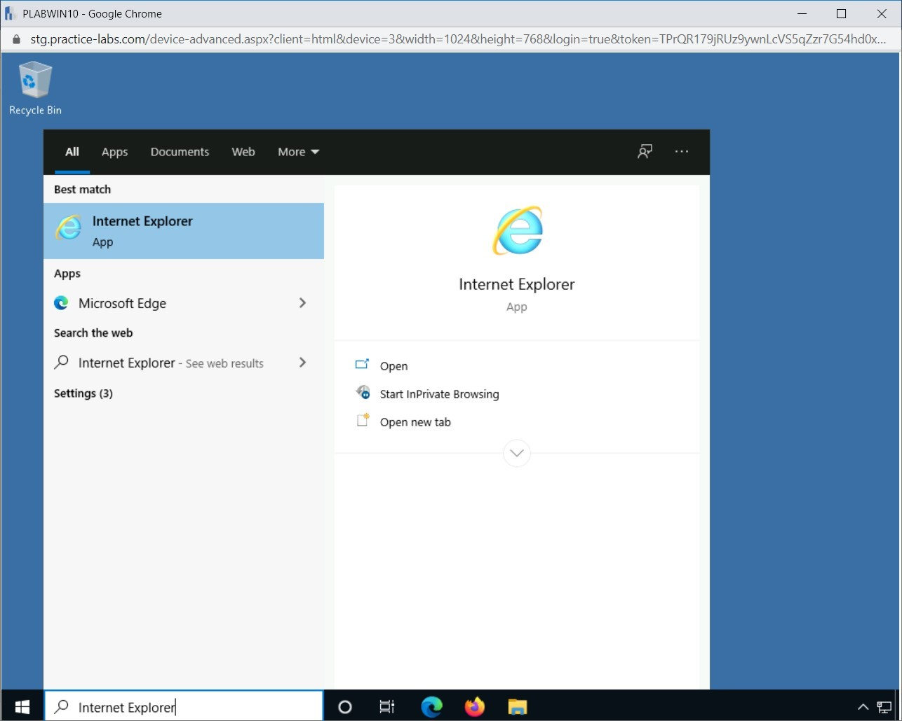Figure
1.63 Screenshot of PLABWIN10: Typing Internet Explorer in the Type here
to search text box and select it from the Best Match section.
Step 13
The Internet Explorer window is displayed. In the Internet Explorer window, the default homepage, which is the Practice Labs Intranet, is displayed.
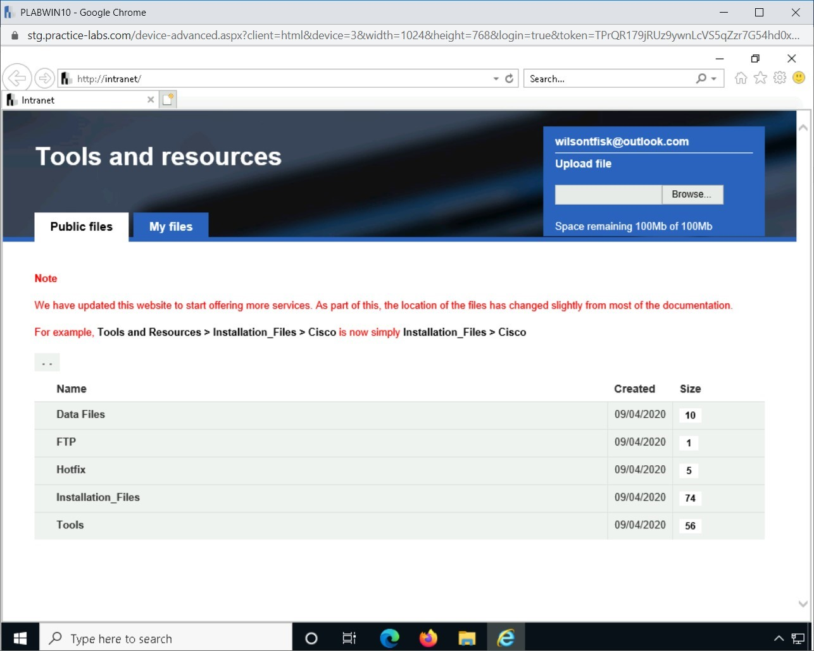Figure 1.64 Screenshot of PLABWIN10: Showing the default home page of the intranet Website.
Step 14
In the address bar, type the following URL:
https://www.whois.com
Press Enter.
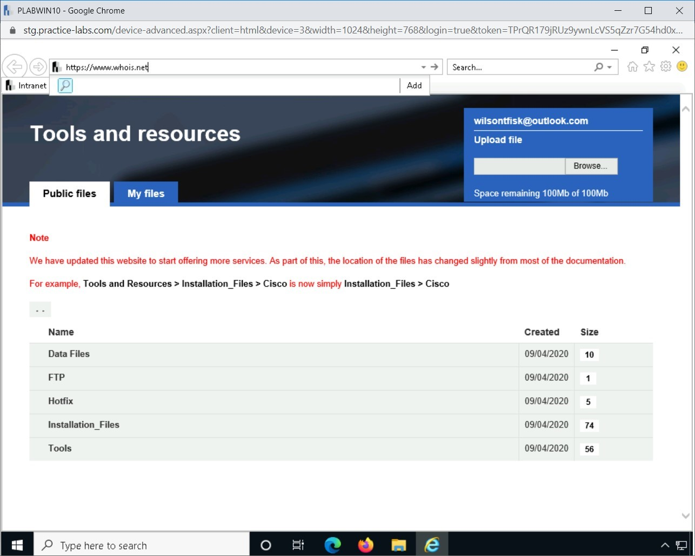Figure 1.65 Screenshot of PLABWIN10: Typing the URL in the address bar of the Internet Explorer.
Step 15
The WHOis.net Website is displayed.
Note: Even if
you enter http, it will automatically convert to https. Also, you can
get the domain information from the https://whois.icann.org/en Website.
Figure 1.66 Screenshot of PLABWIN10: Showing the loaded Website, whois.net.
Step 16
In the search bar, type the following URL:
www.practice-labs.com
Press Enter or click on the magnifying glass icon.
Figure 1.67 Screenshot of PLABWIN10: Typing the domain name in the search text box and clicking on the magnifying glass.
Step 17
The results are displayed. Notice in the results, several key points about the Website are displayed. Some of the key ones are:
- Domain name
- Registrar
- Whois server
- Referral URL
- Creation, Updated, and Expiration Date
Figure 1.68 Screenshot of PLABWIN10: Showing the information regarding the Website that was searched.
Step 18
Open another tab in Internet Explorer.
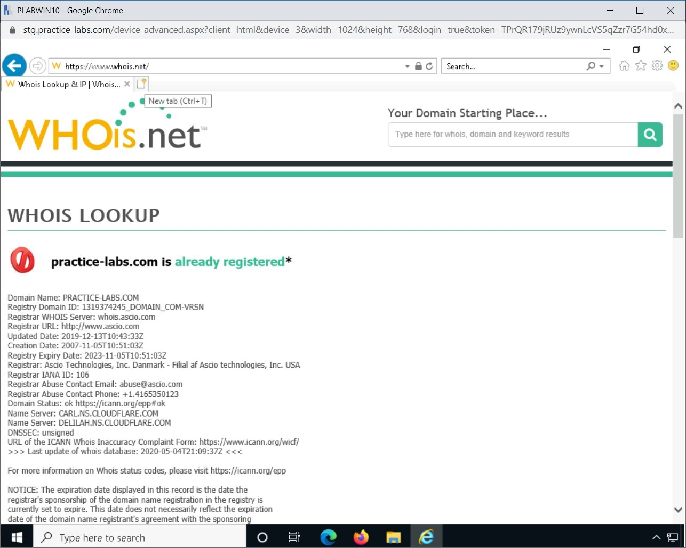Figure 1.69 Screenshot of PLABWIN10: Opening a new tab in Internet Explorer.
Step 19
In the new tab, type the following URL in the address bar:
whois.domaintools.com
Press Enter.
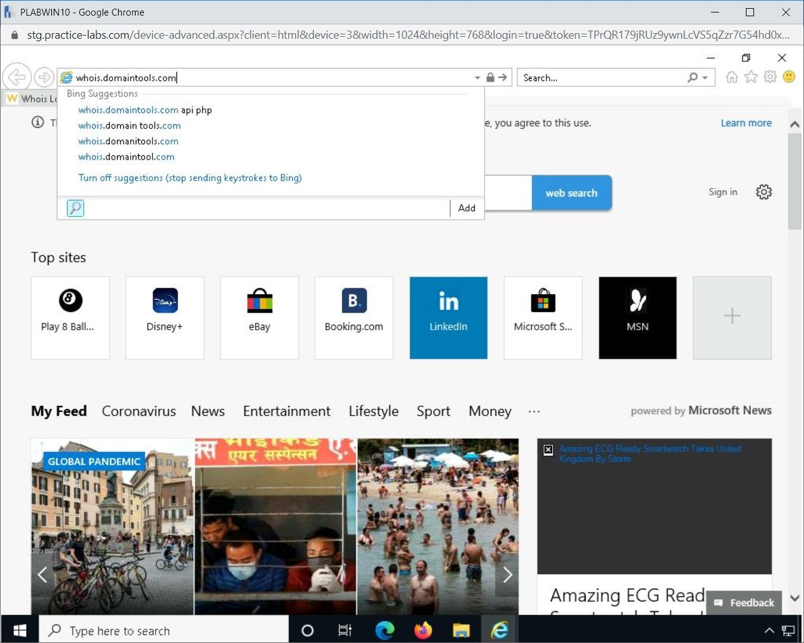Figure 1.70 Screenshot of PLABWIN10: Typing the whois.domaintools.com URL in the address bar.
Step 20
The Whois Lookup Webpage is loaded. In the search text box, type the following URL:
www.practice-labs.com
Press Enter. Alternatively, click Search.
Figure 1.71 Screenshot of PLABWIN10: Showing the whois.domaintools.com Webpage and searching for the domain name.
Step 21
The Whois Record Webpage is loaded.
Note: Click No on the notification bar if it appears.
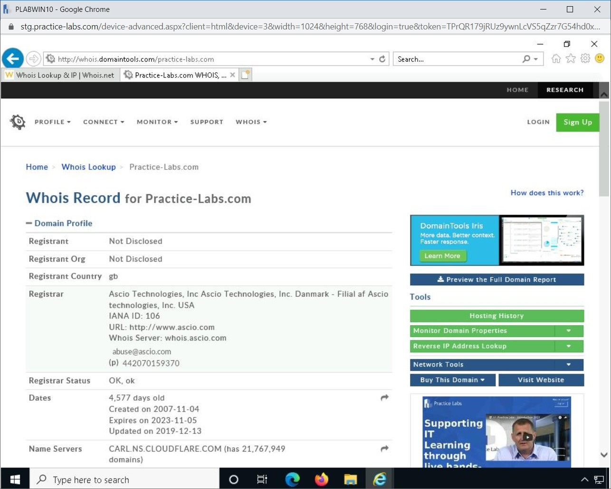Figure 1.72 Screenshot of PLABWIN10: Showing the information about the searched domain name.
Step 22
Notice that this Webpage displays much information as compared to the WHOis Website.
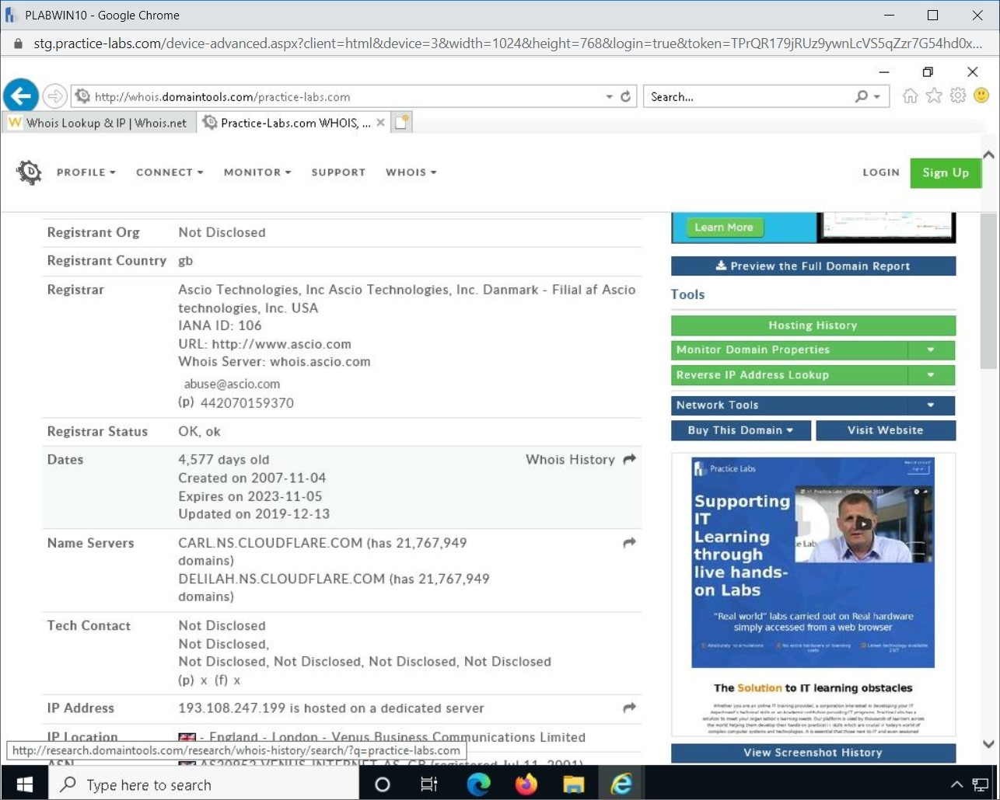Figure 1.73 Screenshot of PLABWIN10: Showing information about the searched Website.
Step 23
Scroll down to view some of the following information:
- Server type
- IP address
- IP location
- IP history
- Registrar history
Close Internet Explorer.
Figure 1.74 Screenshot of PLABWIN10: Showing information about the searched Website.
Step 24
nslookup is a network administration command-line tool that is primarily used to query the Domain Name System (DNS). Using this tool, you can obtain the domain name or IP address mapping.
To use the nslookup, perform the following steps:
Connect to PLABKALI01.
Ensure that you have logged into PLABKALI01. Open the terminal if already not opened.
Figure 1.75 Screenshot of PLABKALI01: Clicking the Terminal icon in the left pane.
Step 25
The terminal window is displayed. Enter the following command:
nslookup practicelabs.com
Press Enter.
Figure 1.76 Screenshot of PLABKALI01: Typing the nslookup command in the terminal window.
Step 26
Note that the IP address for the domain, practicelabs.com,
is displayed. The first two lines of output specify the server to which
the request was directed. This is the default server for DNS name
resolution. The second section provides the name of the record and its
corresponding IP address.
In this example, the DNS server is 192.168.0.1. The record for practicelabs.com is also mapped to the same IP address, 192.168.0.1. In the real-world scenario, you are likely to get both of them to be different IP addresses.
Figure 1.77 Screenshot of PLABKALI01: Showing the results of the nslookup command.
Step 27
You can also check for a specific record. For example, to check for any A records for practicelabs.com, type the following command:
nslookup -type=A practicelabs.com
Press Enter.
Figure 1.78 Screenshot of PLABKALI01: Showing the output of the nmap -sP command.
Step 28
Note that the IP address for the domain, practicelabs.com, is displayed.
Figure 1.79 Screenshot of PLABKALI01: Showing the result of the nslookup command for the A records of the specified domain.
Step 29
You can use the -type=soa option to tell nslookup to display the authoritative (primary) name server. Type the following command:
nslookup -type=soa practicelabs.com
Press Enter.
Figure 1.80 Screenshot of PLABKALI01: Typing the nslookup command for the type A records of the specified domain.
Step 30
Notice that the output of this command is displayed.
Figure 1.81 Screenshot of PLABKALI01: Showing the result of the nslookup -type=soa command.
Step 31
Clear the screen by entering the following command:
clear
You can also verify how long a record is cached using the debug parameter. Type the following command:
nslookup -type=A -debug practicelabs.com
Press Enter.
Figure 1.82 Screenshot of PLABKALI01: Typing the nslookup -type=soa parameter.
Step 32
Note that there is no indication of when the records
are going to expire. However, if you attempt to execute this command on a
live server on the Internet, you will get the answer. The internal
server does not provide complete details.
Figure 1.83 Screenshot of PLABKALI01: Showing the result of the nslookup -type=A command with the debug parameter.
Step 33
Clear the screen by entering the following command:
clear
You can also use the MX record to map a domain name to a list of mail exchange servers for that domain. For example, the MX record provides the details of the mail server to which all the E-mails are sent for the practicelabs.com domain. Type the following command:
nslookup -query=MX practicelabs.com
Press Enter.
Figure 1.84 Screenshot of PLABKALI01: Typing the nslookup -query=MX parameter.
Step 34
Since there is no mail server for this domain, notice that there is a failure of this command.
Figure 1.85 Screenshot of PLABKALI01: Showing the result of the nslookup -query=MX command.
Step 35
The NS record maps a domain name to a list of the DNS
servers that are authoritative for this domain. Type the following
command:
nslookup -type=ns practicelabs.com
Press Enter.
Figure 1.86 Screenshot of PLABKALI01: Typing the nslookup command with the ns parameter.
Step 36
Since there is only one DNS server, it is now listed as the response to the command.
Figure 1.87 Screenshot of PLABKALI01: Showing the result of the nslookup -type=ns command.
Step 37
You can perform domain name resolution using a specific DNS server. Type the following command:
nslookup practicelabs.com 192.168.0.1
Press Enter.
Figure 1.88 Screenshot of PLABKALI01: Typing the nslookup command for domain name resolution using a specific DNS server.
Step 38
Notice the listed details as the output of this command.
Figure 1.89 Screenshot of PLABKALI01: Showing the result of the nslookup command.
Step 39
Clear the screen by entering the following command:
clear
You can also change the default timeout to wait for a reply using -timeout option. Type the following command:
nslookup -timeout=10 practicelabs.com
Press Enter.
Figure 1.90 Screenshot of PLABKALI01: Changing the timeout for the nslookup command.
Step 40
Observe the output of the command.
Figure 1.91 Screenshot of PLABKALI01: Showing the result of the nslookup -timeout command.
Step 41
You can view all the available DNS records using the -query=any option. Type the following command:
nslookup -query=any practicelabs.com
Press Enter.
Figure 1.92 Screenshot of PLABKALI01: Typing the nslookup command with the query parameter.
Step 42
Notice the listed details as the output of this command.
Figure 1.93 Screenshot of PLABKALI01: Showing the nslookup -query=any command.
Step 43
Clear the screen by entering the following command:
clear
Keep the terminal window open.
Task 4 - Responder
Responder is a multi-protocol authentication server
that can answer the NetBIOS Name Service (NBT-NS) queries. It works only
with the File Server Service request that is sent using SMB. In this
task, you will learn to use Responder.
To use Responder, perform the following steps:
Step 1
Ensure you have powered on all the devices listed in the introduction and connect to PLABKALI01.
Open the terminal if not opened already.
Figure 1.94 Screenshot of PLABKALI01: Showing the terminal window in PLABKALI01.
Step 2
For Responder to work, it requires Python to be installed. A version of Python is
already installed in this lab environment, and therefore, you do not
have to perform the installation. You can go ahead and check the version
of Python using the following command:
python --version
Press Enter.
Figure 1.95 Screenshot of PLABKALI01: Executing the command to verify the Python version.
Step 3
The output of the command is displayed. It shows the version 2.7.16+ as the installed version of Python.
 Figure 1.96 Screenshot of PLABKALI01: Showing the Python version in the terminal window.
Figure 1.96 Screenshot of PLABKALI01: Showing the Python version in the terminal window.
Step 4
Clear the screen by entering the following command:
clear
Next, you will need to start Responder. Type the following command:
python /usr/share/responder/Responder.py -I 192.168.1.3 -I eth0
Press Enter.
Figure 1.97 Screenshot of PLABKALI01: Entering the command to start Responder.
Step 5
Responder starts. It is now listening for events.
Figure 1.98 Screenshot of PLABKALI01: Showing that the Responder has started.
Step 6
Connect to PLABWIN10. Right-click the Windows Start charm and select Run.
Figure 1.99 Screenshot of PLABWIN10: Right-clicking the Windows charm and selecting Run.
Step 7
The Run dialog box is displayed. Type the following path in the Open text box:
\\ 192 . 168 . 0 . 3
Click OK.
Figure 1.100 Screenshot of PLABWIN10: Entering the path for Kali Linux in the Run dialog box and clicking OK.
Step 8
Immediately switch back to PLABKALI01. Notice that the NTLMv2 hashes have been captured along with the system IP address and username.
Figure 1.101 Screenshot of PLABKALI01: Showing the captured hashes and user details in the terminal window on PLABKALI01.
Step 9
Press Ctrl + c to terminate Responder.
Figure 1.102 Screenshot of PLABKALI01: Pressing the Ctrl + c keys to terminate Responder.
Step 10
Switch back to PLABWIN10. Notice that there is an error that is displayed. Click Close.
Figure 1.103 Screenshot of PLABWIN10: Showing the Network Error dialog box on PLABWIN10.
Step 11
Click Cancel on the Run dialog box.
Figure 1.104 Screenshot of PLABWIN10: Showing the desktop of PLABWIN10.
Step 12
Switch back to PLABKALI01.
Clear the screen by entering the following command:
clear
List the files in the Responder directory. Type the following command:
ls -l /usr/share/responder/
Press Enter.
Figure 1.105 Screenshot of PLABKALI01: Entering the command to list files in the Responder Directory.
Step 13
The output displays the list of files and directories.
Figure 1.106 Screenshot of PLABKALI01: Displaying the output of files in the Responder directory.
Step 14
Clear the screen by entering the following command:
clear
You need to navigate to the logs directory. To do this, type the following command:
Ls -l /usr/share/responder/logs
Press Enter.
Figure 1.107 Screenshot of PLABKALI01: Typing in the command to navigate to the Responder Logs directoy.
Step 15
The output of the command displays a list of files. Notice that there is a file named SMB-NTLMv2-SSP-192.168.0.4.txt. This is the file that Responder has generated with the output.
Figure 1.108 Screenshot of PLABKALI01: Showing the SMB-NTLMv2 file in the logs directory.
Step 15
Clear the screen by entering the following command:
clear
You will now use John the Reaper to read this file and crack the NTLMv2 hash. Type the following command:
john /usr/share/responder/logs/SMB-NTLMv2-SSP-192.168.0.4.txt
Press Enter.
Figure 1.109 Screenshot of PLABKALI01: Entering the john command to crack the hashes in the SMB-NTLMv2 file.
Step 16
Notice that the hash has been cracked. The password for the Administrator is Passw0rd.
Figure 1.110 Screenshot of PLABKALI01: Showing the password for the Administrator account.
5552932f-e263-4095-bb6a-fa7be9031d50
Close the terminal window.
<
Home |
README |
Vulnerability Scanning and Enumeration and Assessment >
CompTIA Cybersecurity Analyst (CySA+) Practice Labs
Exercise 2 - Leveraging the Gathered Information
After performing passive reconnaissance, you now need
to put the gathered information to use. Different tools were used to
gather various types of information, such as IP addresses, DNS
information, subdomain names, and so on. Beyond this point, you now need
to make good use of this information.
In this exercise, you will learn about leveraging the gathered information.
Learning Outcomes
After completing this exercise, you will have further knowledge of:
- Analysis and Weaponization
- Content of Interest
- Preparing for Next Steps and its Guidelines
Your Devices
This exercise contains supporting materials for CySA+.

Finding Analysis and Weaponization
Weaponization is a method of using the information
gathered in the reconnaissance phase and then use it as pointers for
proceeding further. With the help of weaponization, you can decide what
actions to be performed next. Weaponization helps to filter useful
information from the gathered information carefully.
The information must be filtered carefully based on some of the key criteria:
- Scope of what needs to be tested
- Targets involved in the testing
- Capabilities of the team who will be testing
When filtering and analyzing information, you need to
keep the big picture in mind. The information can be filtered into
three categories:
- Information that can be used immediately
- Information that is not useful at present but can be used later
- Information that has no use and can be discarded
Filtering and analyzing information becomes a
critical task. If not done with caution, the testing may cause delay or
direct it in the wrong directions.
Content of Interest
In passive reconnaissance, you are likely to find quite a bit of information. Some of such information is likely to be:
- IP addresses and sub-domains
- Organization’s partner’s or vendor’s Websites
- Employee information
- Social Engineering
- Systems and devices
Let’s look at each one of them in detail.
IP Address and sub-domains
In the passive reconnaissance, you are likely to
discover the public IP addresses that are used by various services, such
as Web servers, FTP servers, and messaging servers. This information
can be useful as it might serve as an entry point to a private network.
This is likely to happen when a service hosted on the public IP address
is vulnerable and can be exploited to gain entry into the private
network.
You can also enumerate DNS to figure out the
subdomains if they exist. A subdomain is likely to represent an internal
network, such as intranet.plab.com. This might be a good option to
explore and can be used in testing. If any vulnerabilities may exist,
you can exploit them to gain entry into the private network.
Organization’s partner’s or vendor’s Websites
An organization’s partner or vendor’s Website may or
may not be useful in testing. If the vendor is currently not active with
the organization, then there is no point in including its Website in
the testing. However, if the vendor or partner is currently working with
the organization, then it will depend on the scope of testing.
A vendor or partner’s Website, however, may reveal
information about the organization, its key personnel, and their E-mail
IDs, which can be mentioned in reference articles, for example. Such
information can be useful in testing.
Employee Information
Information about an employee can be gathered using
different mediums. For example, you can explore some of the mediums,
such as:
- Social media Websites, such as Facebook, Twitter, LinkedIn and so on
- PGP E-mail searches using various tools, such as theHarvester
- Organization’s Website
There are enough methods that can be used to gather
information about employees. Some of the key information that you can
target is:
- E-mail addresses
- Phone numbers
- Designations
- Nature of their job profile - technical or non-technical
- Office location
- Date of birth
- Interests
- Relationships
Social Engineering
The gathered information about individuals can be
used in social engineering. For example, you can attempt a
spear-phishing attack and design the phishing E-mail in a manner that
makes the victim believe what has been written. This can happen because
you have used some of the personal points, such as bank account
information, in the E-mail.
Systems and devices
Using various tools, such as Maltego, you can
discover the technology being used in the organization’s public Website.
Most simply, you can discover the type of Web servers being used. Once
you discover servers such as Internet Information Services (IIS) being
used, you can focus on targeting the IIS server in active
reconnaissance.
You can also research and discover the
vulnerabilities that may exist. In some cases, you will find that the
organization has not patched their servers. This gives you a good chance
to exploit open vulnerability during testing.
Preparing for Next Steps and its Guidelines
After reconnaissance, you need to prepare for the next steps. Here are some of the key guidelines that you can use:
- Weaponize the information carefully and filter the
information - something that you can use right away, something can be
kept aside for future, and something that needs to be discarded.
- Information that is not required should be discarded
immediately. The focus should be on the information that helps you
achieve actionable tasks.
- Filter the information within the scope of testing.
Do not filter based on individual tasks as the information should not be
used in isolation.
- Filter out information on the public and private IP
addresses. Public IP addresses may belong to Web servers, which can be
targeted later.
- Find and filter the information about the
individuals who work for the organization. This information can become
handy in conducting social engineering attacks.
- Find and filter the systems, servers, devices,
routers information. These will become the potential targets in testing,
with the exception that the scope permits them to be used as targets.
- Carefully use the gathered information within the scope of testing.
- Appraise the entire information with the gathered information and its analysis.
Document the findings for later use. A document with
the complete findings can be helpful for the team at a later stage or in
another project.
dc2a295a-ab17-4b52-8e1c-80389d10a470
86b3caf2-2504-4e20-a81b-2fcb2368c8d2
Keep all devices that you have powered on in their current state and proceed to the review section.
Review
Well done, you have completed the Enumeration Practice Lab.
2abaca70-efa1-4fe5-94fb-ad1777bfc242
72647204-5262-4cb4-ae64-fdbc030651cd
4f191190-aa8a-496e-8c43-8613ea83b0a0
ff194623-3632-4752-b56d-e5cc6344c96a
43f493fb-45fe-4c75-a493-fbf9a7f60b32
cbc206fc-2bcd-4961-9349-c36f8c009193
aaaaaaaa-1111-1111-1111-193f35a24fe3
Summary
You completed the following exercises:
- Exercise 1 - Enumeration
- Exercise 2 - Leveraging the Gathered Information
You should now be able to:
- Use Nmap
- Use the Hping Command
- Understand Active vs. Passive Enumeration
- Use the Responder
You should have further understanding of:
- Analysis and Weaponization
- Content of Interest
- Preparing for Next Steps and its Guidelines
Feedback
067744a4-4299-4662-b5be-04dbb636a007
Shutdown all virtual machines used in this lab. Alternatively, you can log out of the lab platform.